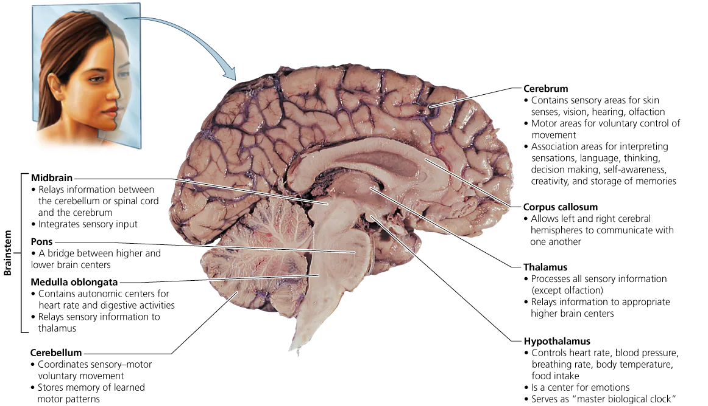
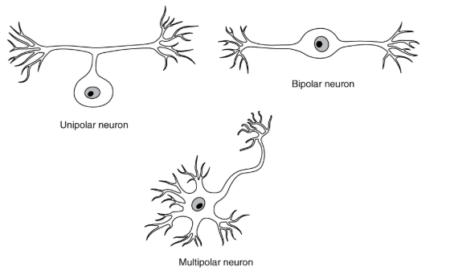
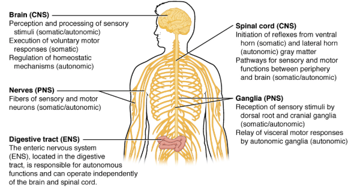
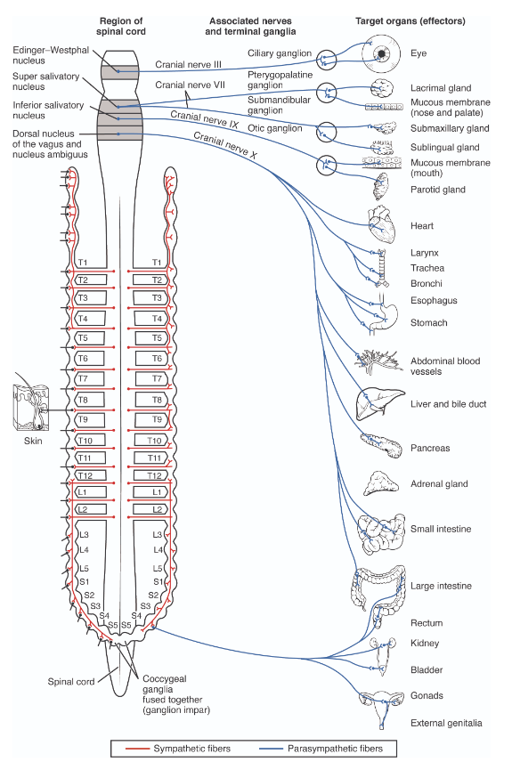
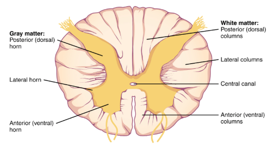
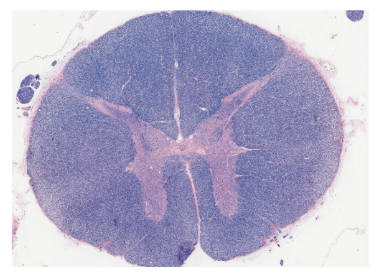

BIO 5 · Human Biology · Fall 2026 · Whalen
Week 10 — Nervous System (CNS, PNS, ANS)
Each source keeps its own tab; the last tab blends them into one account of the week.
Deadlines this week
-
Mon 10/12
Readings: Ch. 8 · Ch. 8a
read before the week's lectures -
Mon 10/12
Board work sheet
handed in at the start of lab -
Fri 10/16
11:59pm Mastering Biology DSM: CH 8
1 pt -
Fri 10/16
11:59pm WK 10 Practice Test
5 pts -
Fri 10/16
11:59pm Lab 9 document — 10 pts
Lab 9: Nervous System & Nervous Tissue · Lab 9 Quiz, 15 pts
This week's lab
- Lab 9 — Nervous System & Nervous Tissue
Monday 10/12
Coming up
- Week 11 — Sensory Systems
Oct 19–23, 2026
Chapter 8 — The Nervous System
Captured from the Pearson eText. pp. 127–142.
- 8.1 Organization of the Nervous System
- 8.2 The Central Nervous System
- 8.3 The Peripheral Nervous System
- 8.4 Disorders of the Nervous System
Did you know
- A fastball reaches the batter in under half a second; reaction time is about 0.75 second — so the batter starts the swing before the ball leaves the pitcher's hand.
- Your brain cannot feel pain. It has no pain receptors.
- You have almost 45 miles of nerves.
Opening
Ch. 7 was the cell — how neurons signal. Ch. 8 is the system: how the nervous system is organised, what each part does, and what goes wrong when a part is damaged. Ch. 8a takes psychoactive drugs. (p. 127)
The chapter as one chain
- The system splits twice, and the splits are the spine of the chapter — CNS vs PNS; PNS into somatic (voluntary) and autonomic (involuntary); autonomic into sympathetic and parasympathetic. Figure 8.1 is that tree.
- The CNS is fragile, so it is defended four ways — bone, meninges, cerebrospinal fluid, blood–brain barrier — and each defence has a matching failure.
- The cerebrum is divided by function, mapped onto places — four lobes, three area types (sensory, motor, association), two body maps whose proportions follow sensitivity and dexterity, not size.
- Below the cerebrum each structure has one job, and the job predicts the symptom — thalamus relays, hypothalamus keeps homeostasis, cerebellum coordinates, medulla runs the vital reflexes, pons bridges, midbrain handles sight-and-sound reflexes.
- Two systems are defined by function, not location — the limbic system (emotion, memory, smell) and the reticular activating system (filter, alarm clock).
- The spinal cord does two things at once — carries traffic up and down in white-matter tracts, and makes its own decisions in gray-matter reflex arcs. The reflex finishes before the brain knows.
- The autonomic branches are antagonistic, and the anatomy explains it — sympathetic ganglia form a chain, so it fires as one; parasympathetic ganglia sit at their organs, so its effects are local.
- Every disorder in §8.4 is a lesion somewhere on that map, and the symptom tells you where.
What to focus on
| Section | Slides | Share |
|---|---|---|
| 8.1 Organization | 7 | 10% |
| 8.2 Central Nervous System | 42 | 60% |
| 8.3 Peripheral Nervous System | 12 | 17% |
| 8.4 Disorders | 5 | 7% |
| Title, outline, objectives | 4 | 6% |
Ch08 AC SP20.pptx, 70 slides. Slide count per section is the best predictor of exam weight. There is no deck for Ch. 8a.Whalen's objectives
From the deck (slides 69–70) and BIO 5 Study Guide CH 8.docx, in his order. One guide covers Ch. 8 and 8a; the drug objectives are on the 8a tab.
- The functional arrangement of the nervous system; the functions of the CNS, PNS, ANS, somatic, sympathetic and parasympathetic systems.
- Compare sympathetic and parasympathetic on arrangement of ganglia, functions, speed of response, and examples of actions.
- The protective structures of the CNS — meninges, cerebrospinal fluid (structure, functions, locations), blood–brain barrier.
- The regions of the cerebrum and their functions; compare gray matter and white matter.
- Location and function of: primary motor cortex, primary somatosensory area, association areas, prefrontal cortex, thalamus, hypothalamus, cerebellum, pons, medulla, midbrain.
- The limbic system and the reticular activating system — components and functions.
- The arrangement of white and gray matter in the spinal cord; the components of a reflex arc and the function of reflexes.
- The arrangement of peripheral nerves — cranial and spinal.
- Disorders: headaches, strokes, coma, spinal cord injury.
8.1Organization of the Nervous System
pp. 128The tree
- Seen apart from the body, the nervous system is a dense mass of neural tissue where the head should be, with a cord running down where the middle of the back should be.
- Central nervous system (CNS) — the brain and spinal cord. Integrates and coordinates all voluntary and involuntary nervous functions.
- Peripheral nervous system (PNS) — the nerves and ganglia outside the CNS. Nerves are the "cables" carrying messages to and from the CNS, branching into a vast network; the PNS keeps the CNS in continuous contact with almost every part of the body.
- Ganglion (pl. ganglia) — a small cluster of nerve cell bodies outside the CNS. A cluster inside the CNS is not called a ganglion; the dorsal-root ganglion (§8.3) is the example, and it sits outside the cord.
- The PNS subdivides by function:
- Somatic nervous system — carries information to and from the CNS, giving sensation and voluntary movement.
- Autonomic nervous system — governs the involuntary, subconscious activities that keep the body running. Two parts with generally opposite effects on the muscles and glands they control — antagonistic, not sequential:
- Sympathetic nervous system — in charge during stress or emergency.
- Parasympathetic nervous system — conserves energy during nonstressful times.
- Lecture The deck splits the PNS one level finer, on the sensory side as well — somatic sensory (from the external environment: proprioception, sight, hearing) and visceral sensory (from the internal environment: smell, taste). The guide's first objective, "functional arrangement," is this tree, which contains the book's.

The book's example — all four at once
- Meditating in the park: the parasympathetic system keeps life-sustaining activity going.
- Someone takes your hand: skin receptors (somatic) send pressure and warmth to the spinal cord; cord neurons relay it to the brain; the brain integrates and "decides" — opens your eyes.
- If the sight stirs strong emotion, the sympathetic system speeds heartbeat and breathing. "All the parts function as a coordinated whole."
8.2The Central Nervous System
pp. 129–136Protection of the CNS
- Why it matters: neurons are very fragile, and most cannot divide — so with few exceptions a damaged or dead neuron is not replaced.
- Four defences — bone (skull, vertebral column), meninges, cerebrospinal fluid, blood–brain barrier.
- Meninges — three connective-tissue coverings, outer to inner:
- Dura mater — tough and leathery.
- Arachnoid — "like a cobweb"; anchored to the pia by thin threads.
- Pia mater — molded to the brain "like a leotard," dipping into every fold.
- Meningitis — inflammation of the meninges. Always serious: it can spread to the brain as encephalitis, which can be deadly. Bacterial → antibiotics; viral → pain and fever medicine while the immune system fights it.
- Dormitory freshmen are at increased risk — close quarters; carriers can hold the bacteria in the throat with no symptoms and spread it by coughing, sneezing or intimate kissing. Upperclassmen are less susceptible, perhaps from built-up immunity. Vaccines exist against most but not all forms.
- Cerebrospinal fluid (CSF) — fills the space between the meninges, the ventricles (cavities inside the brain) and the central canal (the cavity down the spinal cord). Formed in the ventricles, circulates through the central canal, reabsorbed into the blood.
- Three jobs: shock absorption (an air bag against the skull); support (the brain floats, so it is not crushed by its own weight); nourishment and waste removal.
- Even so, 7 million brain injuries a year in the United States.
- Blood–brain barrier — selects what may pass from blood into the CSF. Formed by tight junctions between the cells of the capillary walls serving the brain and cord: the cells are joined so tightly that substances must pass through them, not between, and the cell membranes filter the result.
- The membranes are largely lipid, so lipid-soluble substances cross easily — oxygen, carbon dioxide, and caffeine and alcohol, which is why those two hit the brain fast.
- The cost: many lifesaving, infection-fighting or tumor-suppressing drugs are not lipid-soluble and cannot get in. Ch. 7's L-dopa problem is this barrier.

The cerebrum
- The brain: consistency of soft cheese, under 1600 g (3 lb), probably under 3% of body weight.
- Cerebrum — the largest part, "your thinking cap," 83% of brain weight. The longitudinal fissure splits it front-to-back into two hemispheres. Each hemisphere receives sensation from, and directs movement of, the opposite side of the body.
- Cerebral cortex — the thin outer layer (cortex = bark). Gray matter: neuroglia, nerve cell bodies, unmyelinated axons. About 2.5 mm (one-eighth inch) thick but highly folded; the convolutions triple its surface area.
- Cerebral white matter — beneath the cortex; mostly myelinated axons, which is why it is white. Lets brain regions talk to each other and to the cord. The corpus callosum is the white-matter band joining the two hemispheres.
- Four lobes per hemisphere — frontal, parietal, temporal, occipital. Assigning a function to a region is imprecise, but there are three types of functional area: sensory, motor, association.
- Sensory areas — awareness of sensation. The book's parade: hearing → auditory area, temporal lobe; vision → visual area, occipital; smell → olfactory area, temporal; taste → gustatory area, parietal.
- Primary somatosensory area — touch, pain, temperature, position. A band across the parietal lobes from ear to ear; each body part is represented in the opposite hemisphere; the more sensitive the part, the more cortex it gets — tongue, hands, face and genitals most, the forearm least.
- Motor areas —
- Primary motor area — voluntary movement. A band in the frontal lobe just in front of the somatosensory band, organised the same way: finer control (tongue, fingers) gets more cortex than the trunk. The two maps are similar in arrangement, not identical.
- Premotor cortex — just in front of the motor cortex. Coordinates learned, patterned, repetitive skills (typing, an instrument) and the movement of several muscle groups at once. A pattern repeated many times is stored here; the premotor cortex then drives the primary motor cortex in that pattern without the musician thinking about finger placement.
- Association areas — beside each primary sensory area; analyse and act on sensory input.
- General interpretation area — assigns meaning by combining sensory association input with stored memories. A small shape on a dark night: rubs your leg and purrs, the neighbour's cat; turns and raises its tail, a skunk.
- Prefrontal cortex — the most anterior frontal lobe, "the most complicated of all association areas." Predicts the consequences of possible responses and picks the best; lets us reason, plan long-term and think abstractly; key to personality.


what the postcentral band is called; Figure 8.4 labels it "primary sensory area," while the text, the key-terms list, Figure 8.5 and the deck (slide 8.213) all say "primary somatosensory area." Same structure, two names — a question may use either.
which structure stores learned motor patterns; the text says the pattern is stored in the premotor cortex (the guitarist), while Figure 8.3's cerebellum box reads "Stores memory of learned motor patterns." The deck sides with the text — slide 8.214 gives the premotor cortex "coordinates learned motor skills," slides 8.219–8.220 give the cerebellum only coordination, comparison and prediction.
Below the cerebrum
- Thalamus
- the gateway to the cortex — every sense but smell passes through it, is sorted by function and relayed.
- Hypothalamus
- homeostasis; links nervous and endocrine systems through the pituitary; part of the limbic system.
- Cerebellum
- sensory–motor coordination, equilibrium and posture — by comparison and prediction.
- Medulla oblongata
- reflex centres for breathing rhythm, heart force and rate, blood pressure; all traffic between cord and brain passes through it.
- Pons
- the bridge — connects cord and cerebellum with cerebrum, thalamus and hypothalamus; helps the medulla regulate breathing.
- Midbrain
- processes sights and sounds and runs simple reflexes to them.
- Limbic system
- emotion and memory; defined by function, not anatomy.
- Reticular activating system (RAS)
- filters sensory input and keeps the cortex awake; consciousness needs it.
- Thalamus — sensory experience, motor activity, cortical stimulation, memory. At the thalamic level you have only a general impression of pleasant or unpleasant: step on a tack and you feel pain when the message reaches the thalamus, but you do not know where until it reaches the cortex. Smell is the one sense that bypasses it — the olfactory bulb goes straight to the limbic system.
- Hypothalamus (hypo, under) — a small region below the thalamus. Influences blood pressure, heart rate, digestion and breathing rate; holds body temperature at its set point; regulates hunger and thirst. Because it takes input from the cortex, merely seeing or thinking of something exciting or dangerous can speed the heart. Specific regions serve sex drive and the perception of pain, pleasure, fear and anger. Heart rate and blood pressure appear under the medulla too — the medulla holds the reflex centres, the hypothalamus influences them from above.
- Cerebellum — an automatic pilot for smooth, well-timed voluntary movement. Takes in joint position and muscle and tendon tension, and integrates it with the eyes and the equilibrium receptors of the ears. Two processes:
- Comparison — continuously compares where each body part is with where it should be, and corrects. Touch your two index fingertips together above your head: you miss the first time, succeed the next.
- Prediction — calculates future positions and stops the movement at the intended point, so your hand stops at the itch on your cheek instead of slapping your face.
- Brain stem = medulla oblongata, pons, midbrain.
- Medulla oblongata — "this marvelous inch of nervous tissue." Connects the cord to the rest of the brain, so all sensory input going up and all motor output going down runs through it. Because breathing, heart rate and blood pressure live here, a lesion is fatal in a way an equal-sized cortical lesion is not.
- Pons — "bridge." Also has a region that assists the medulla with respiration.
- Midbrain — an unexpected loud sound and you turn your head and eyes toward it.
- Limbic system — parts of several brain regions plus the pathways connecting them. The "emotional brain": rage, pain, fear, sorrow, joy, sexual pleasure; emotions motivate behaviour that improves survival. Connections to the cerebrum let us have feelings about thoughts and thoughts about feelings. It includes the hypothalamus and connects to lower centres such as the medulla — hence "gut" responses to emotion.
- Memory has two stages. Short-term memory holds a little information for seconds to minutes; long-term memory holds seemingly limitless amounts for hours, days or years. Not every short-term memory is consolidated into long-term, but when one is, the hippocampus is essential.
- Amygdala — widely connected to sensory and emotion centres; associates memories from different senses and ties them to emotional states.
- The olfactory bulb carries odour straight into the limbic system, so emotion, memory and smell meet there — which is why a smell can bring back a memory.
- Reticular activating system (RAS) — an extensive network of neurons running through the medulla and projecting to the cortex.
- Filter — about 100 million impulses a second reach the brain, mostly trivial. The RAS screens out repetitive, familiar stimuli (traffic, rustling paper, the pressure of clothing) and passes infrequent or important ones to consciousness. You sleep through the television and wake when someone whispers your name.
- Activator — unless inhibited, the RAS keeps the cortex alert. "Consciousness occurs only while the RAS stimulates the cerebral cortex"; when sleep centres inhibit the RAS, we sleep. The cortex can also stimulate the RAS, which stimulates the cortex — a loop, which is why thinking about a problem can keep you up all night.


whether the midbrain or the pons is the relay; the text gives the pons the bridging role and the midbrain sights, sounds and simple reflexes, while Figure 8.3's midbrain box reads "Relays information between the cerebellum or spinal cord and the cerebrum" and its pons box is only "A bridge between higher and lower brain centers." The deck sides with the text — slide 8.224 midbrain sights and sounds, slide 8.225 pons the bridge.
whether the hypothalamus is the body's clock; Figure 8.3's hypothalamus box adds "Serves as 'master biological clock,'" a function stated nowhere in the text, the key terms, the chapter summary or the deck. One box in one figure is its only appearance in the course.
The spinal cord
- A tube of neural tissue continuous with the medulla, about 45 cm (17 in.), ending just below the last rib. About the width of your little finger, thickening in two places — just below the neck and at the lower end — for the nerves to the arms and legs. The central canal, filled with CSF, runs its length.
- Encased in the stacked vertebrae; pairs of spinal nerves leave through the gaps between them, which are cushioned by cartilage disks.
- Two functions:
- Transmit messages to and from the brain — the white matter, toward the outer surface: myelinated axons grouped into tracts. Ascending tracts carry sensory information up; descending tracts carry motor information down.
- Serve as a reflex centre — the gray matter, in the centre, holds the interneurons and the cell bodies of motor neurons. This is the reverse of the cerebrum, where gray is outside and white inside.
- A reflex is an automatic response to a stimulus, prewired in a circuit called a reflex arc: receptor → sensory neuron → usually at least one interneuron → motor neuron → effector (a muscle or gland).
- Spinal reflexes are "decisions" made by the cord — useful when speed matters to safety. The withdrawal reflex is the example. Pain also goes up to the brain by the ascending tracts, but that route is longer in distance and in synapses, so by the time the brain registers pain the foot has already moved.


8.3The Peripheral Nervous System
pp. 137–138Spinal and cranial nerves
- The PNS is the nerves and ganglia between the CNS and the rest of the body — spinal nerves and cranial nerves.
- Spinal nerves — 31 pairs. Each starts in the cord and serves a specific region; one of each pair serves the right side, the other the left. Every spinal nerve carries both sensory and motor fibres.
- Dorsal root — sensory fibres enter the cord from the dorsal (back) side in this bundle. Their cell bodies sit in a ganglion in the dorsal root — the dorsal-root ganglion, outside the cord.
- Ventral root — motor axons leave the ventral (front) side in this bundle. Their cell bodies sit inside the cord, in the gray matter.
- The two roots join into one spinal nerve, which passes out between the vertebrae.
- Cranial nerves — 12 pairs. Arise from the brain; serve the head and some other parts, including the heart and diaphragm. Some carry only sensory fibres, some only motor, some both. The chapter and the deck give them numerals and functions only, never names.

Somatic and autonomic
- Somatic nervous system — sensory messages about the world outside and inside us, giving conscious sensation (light, sound, touch); and voluntary movement — "to smile, stamp a foot, sing a lullaby, or frown as we sign a check."
- Autonomic nervous system — automatically adjusts the organs to keep internal conditions right. The somatic system reports internal conditions to it; it then alters digestion, opens or closes vessels to send blood where it is needed, and changes heart and breathing rate.
- Sympathetic — gears the body for an emergency or stress: fight or flight. Lecture The deck (slides 8.36–8.37): the fast branch; leaves the CNS in the thoracic and lumbar regions.
- Parasympathetic — conserves energy during relaxation. Lecture The deck: the slow branch. Speed of response is on the study guide and the textbook never states it.
- Lecture Both divisions use two-neuron pathways and both help maintain homeostasis.
- Both send fibres to most, but not all, internal organs. Where both reach an organ their effects are antagonistic — one stimulates, the other inhibits. The antagonism is chemical: sympathetic neurons release mostly norepinephrine at their targets, parasympathetic neurons release acetylcholine (the Ch. 7 pairing).
- Why the sympathetic system acts all at once — its neurons are linked through a chain of ganglia, so it fires as a unit, "exactly what is needed in an emergency." It raises breathing rate, heart rate and blood pressure; increases glucose and oxygen to cells; has the adrenal glands release epinephrine and norepinephrine into the blood, which back up and prolong the other effects — so norepinephrine acts twice, as transmitter at the organ and as hormone in the blood; and inhibits digestion.
- Why the parasympathetic system acts organ by organ — its ganglia sit near the individual organs, not in a chain by the cord, so its effects are independent and after an emergency each organ system returns to rest at its own pace. The difference in behaviour comes from ganglion position, not from the neurotransmitters.

where the parasympathetic fibres leave the CNS; Whalen's deck gives two answers three slides apart — slide 8.37 says "cervical and sacral regions," slide 8.39 (the Figure 8.10 slide, using the book's own headings) says "Cranial and sacral." The textbook does not state the regions. Cranial is the standard anatomy and the figure's wording, but the bullet slide says cervical — worth raising if asked.
8.4Disorders of the Nervous System
pp. 139–140Headaches
- Disorders range from a mild headache or short sleep to stroke, coma and spinal cord injury.
- "Thinking too much cannot cause a headache. The brain has no pain receptors, so a headache is not a brain ache." Headaches come from almost anything — stress or relaxation, hunger or the wrong food, too much or too little sleep.
- Tension headache — the most common, 60–80% of frequent headache sufferers. Under stress we unconsciously tense the muscles of head, face and neck; a dull, steady ache like a tight band around the head.
- Migraine — usually one side of the head, often behind one eye; throbbing that rises with each heartbeat. The "sick headache": may bring nausea and vomiting. An aura may precede it — visual (a blind spot, zigzag lines, flashing lights), auditory hallucinations or numbness. Cause not fully understood; some researchers blame a chemical imbalance, specifically low serotonin (the transmitter Ch. 7's antidepressants keep in the synapse) — "with too little serotonin, pain messages flood the brain."
Strokes
- Stroke (cerebrovascular accident) — death of nerve cells from an interruption of blood flow to a region of the brain. Neurons need a lot of oxygen and glucose; cut off the supply and they begin to die within minutes.
- Where the damage is decides the deficit:
- Left side of the brain → loss of sensation or movement on the right side of the body, because motor pathways cross in the lower brain. Language centres are usually left, so speech may be affected too.
- Right rear of the brain → the neglect syndrome: the person acts as if the left side of things, even their own body, does not exist — combs only the right side of the head, eats only the right side of the plate.
- Causes — a clot blocking a vessel; haemorrhage from a ruptured vessel in a meninx; fatty deposits blocking a vessel. Risk factors — high blood pressure, heart disease, diabetes, smoking, obesity, excess alcohol.
Coma
- A coma looks like sleep but is not deep sleep: the person is totally unresponsive to all sensory input and cannot be woken.
- The cortex is most directly responsible for consciousness, yet cerebral damage is rarely the cause. Coma comes from trauma to the regions that stimulate the cerebrum — chiefly the reticular activating system and thalamus. Causes include mechanical shock, tumours, infection, drug overdose, and liver or kidney failure.
Spinal cord injury
- Damage impairs sensation and motor control below the site of injury — so a neck injury takes everything a lower-back injury takes, and more. The extent and location decide how long symptoms last and how much is permanent. Depending on which tracts are hit: paralysis, loss of sensation, or both. A completely severed cord means complete loss of sensation and voluntary movement below the cut.
- Three approaches to restoring function: nerve growth factors to regrow connections; stem cells, which can become nerve cells and have restored some movement in mice; electronic stimulation — a small computer, usually at the wrist, driving wires under the skin or woven into tight clothing — which has let some people walk again and has helped others by stimulating the diaphragm.
- Looking ahead: Ch. 8a is psychoactive drugs, which alter mental state by increasing or decreasing specific neurotransmitters, and so act on specific brain regions. (p. 140)
Stop And Think
1(p. 135) Why would a tumour destroying nerve cells in the medulla lead to death more quickly than one of the same size on the cerebral cortex?
The medulla holds the reflex centres for things that cannot pause — breathing rhythm, heart force and rate, blood pressure — so destroying them stops breathing and circulation within minutes, with nothing to compensate. A cortical tumour of the same size produces a deficit — a sensory, motor, language or reasoning loss — that is serious but not immediately lethal, and that other regions can sometimes partly cover. And all traffic between brain and body runs through the medulla, so damage there also cuts the one channel. Size of lesion matters far less than what the tissue does.
2(p. 136) A boxer takes a hard blow to the jaw; his head, with its medulla and RAS, is twisted sharply. Why can that cause a knockout?
Consciousness needs the RAS actively stimulating the cortex — "the cerebrum 'sleeps' whenever it is not stimulated by the RAS." The brain is soft and sits loosely in the skull; a rotational blow whips the brain stem, where the RAS runs, and disrupts it. With nothing driving the cortex, the cortex shuts off and the boxer is out, even though the cortex itself is undamaged. The same mechanism §8.4 gives for coma — a knockout is a very brief coma.
3("Consider This Case", p. 140) Daisy slipped on ice and hit the back of her head. Days later her vision was blurred and she could not concentrate. Using Figure 8.4, why would a blow to the back of the head cause visual problems?
The occipital lobe — the visual area — is at the back of the head, directly under the impact. The eye only collects the signal; interpretation happens in the occipital cortex, so bruising it degrades vision with the eyes undamaged. That is also why glasses would not fix it — the same lesson as the Ch. 7 multiple-sclerosis case.
4(continued) An intense blow to the back of the head often damages the front. How might that explain Daisy's inability to concentrate?
A contrecoup injury. The Health Issue essay gives the mechanism: in a closed-head injury the brain follows the head's sudden change of motion and ricochets inside the skull, whose inner surface has ridges and sharp edges that cut and bruise — most prominently behind the frontal lobes. Damage there means damage to the prefrontal cortex, which predicts consequences, chooses responses and lets us reason and plan; impaired, it presents exactly as difficulty concentrating and sustaining attention.
Figure Questions
1How do the left and right cerebral hemispheres communicate? (Figure 8.3, p. 131)
Through the corpus callosum, the band of white matter — myelinated axons, the fast long-distance fibres of Ch. 7 — joining the two hemispheres. It matters because each hemisphere serves the opposite side of the body and the two process information somewhat differently; without it, the two halves of the body would be run by two brains with no way to share what each knows.
2Our lips are more sensitive than our forearm, and we have finer motor control of them. How is that represented on the cortex? (Figure 8.5, p. 133)
By area. In the somatosensory band, cortex scales with sensitivity, so the lips get a large stretch and the forearm a small one; in the motor band it scales with dexterity, so the lips are large there too. Figure 8.5 draws this by distorting the body maps — a map of how much processing a part needs, not how big it is.
End Of Chapter Questions
1The three protective membranes that surround the brain and spinal cord form the
a) meninges. b) white matter. c) blood–brain barrier. d) reticular activating system. e) corpus callosum.
a
Meninges are by definition the three coverings. The blood–brain barrier (c) is a filter made of capillary tight junctions, not a membrane around the organ. The only question in the set with five options.
2The autonomic nervous system
a) cannot be affected by emotional states. b) controls conscious body movements. c) is entirely contained within the central nervous system. d) automatically adjusts the functioning of internal organs to suit conditions.
d
That is its definition in §8.1 and §8.3. (a) is directly contradicted — the hypothalamus takes cortical input and fear drives the sympathetic branch; (b) is the somatic system; (c) the autonomic system is a division of the peripheral system.
3Which of the following lists the parts of a reflex arc in the correct sequence?
a) receptor, sensory neuron, motor neuron, interneuron, effector b) effector, receptor, sensory neuron, motor neuron, interneuron c) effector, sensory neuron, receptor, interneuron, motor neuron d) receptor, sensory neuron, interneuron, motor neuron, effector
d
In at the receptor, integrated by the interneuron, out on the motor neuron, act at the effector — Figure 8.8's order. (a) puts integration after the motor command; (b) and (c) start at the effector, which is the end.
4The area of the sensory cortex in the cerebrum devoted to each part of the body
a) is exactly the same as the area of the motor cortex devoted to each region of the body. b) depends on how far away that region of the body is from the brain. c) is greater for regions of the body that are most sensitive to touch. d) is smaller on the left cerebral hemisphere than on the right cerebral hemisphere.
c
"The greater the sensitivity, the greater the area of cortex." (a) is the trap and wrong on one word — the maps are similar, not exactly the same; sensory follows sensitivity, motor follows dexterity, and Figure 8.5's two bodies differ.
5Choose the correct statement about the parasympathetic nervous system.
a) It increases heart rate. b) Its actions back up those of the sympathetic nervous system; that is, usually its actions have the same effect as those of the sympathetic nervous system but start after a delay. c) It directs blood toward the skeletal muscles. d) none of the above
d
All three are sympathetic effects or the reverse of parasympathetic ones — it slows the heart. (b) is the trap: the branches are antagonistic, not sequential; what backs up and prolongs sympathetic effects is adrenal epinephrine and norepinephrine, itself sympathetic.
6Your friend suffered a stroke and now has no feeling in her right arm and is unable to move it. The damage is most likely in the
a) medulla. b) left cerebral hemisphere. c) right cerebral hemisphere. d) hypothalamus.
b
Each hemisphere serves the opposite side; pathways cross in the lower brain. (c) is the trap for forgetting the crossing — it would give left-side symptoms.
7Which of the following is not a function of the hypothalamus?
a) regulation of heart rate b) sensory–motor coordination c) appetite d) regulation of blood pressure
b
Sensory–motor coordination is the cerebellum. Heart rate and blood pressure are listed for the hypothalamus and the medulla — the medulla holds the reflex centres, the hypothalamus influences them.
8Subconscious, rather automatic, activities such as breathing and heartbeat are regulated by the
a) cerebrum. b) cerebellum. c) pons. d) medulla.
d
The medulla's reflex centres — breathing rhythm, heart force and rate, blood pressure. (c) the pons is the closest wrong answer: it assists the medulla with respiration, and has no role in heartbeat.
9The brain stem consists of these structures:
a) medulla oblongata, pons, and midbrain b) medulla oblongata, cerebellum, and pons c) pons, midbrain, and cerebellum d) pons, midbrain, and thalamus
a
Stated in §8.2 and bracketed in Figure 8.3. (b) and (c) add the cerebellum, which sits behind the stem; (d) adds the thalamus, which sits above it.
10When this region of a cat's brain is stimulated electrically, the cat behaves as if it is angry — it hisses, arches its back, and its hair stands on end. The electrode is most likely placed in the
a) hypothalamus. b) cerebellum. c) pons. d) medulla.
a
The hypothalamus is part of the limbic system and its regions serve the perception of pain, pleasure, fear and anger; a rage display plus sympathetic arousal is both at once. None of the other three produces emotion.
11If someone were to yell "Fire!" and you suddenly began to smell smoke, which part of your nervous system would become activated to prepare your internal body systems to deal with the dangerous situation?
a) somatic system b) parasympathetic system c) sympathetic system d) meninges
c
Fight or flight. "Internal body systems" rules out (a) — the somatic system lets you hear the shout and run, but does not adjust organs.
12Which of the following is responsible for reasoning?
a) amygdala b) basal nuclei c) hippocampus d) cerebral cortex
d
Reasoning is the prefrontal cortex, part of the cerebral cortex. (a) ties memories to emotion, (c) consolidates memory; (b) "basal nuclei" is never defined anywhere in this chapter.
13You are watching a football game. A wide receiver makes an incredible catch and then runs 20 yards, skillfully dodging defensive players to make a touchdown. The receiver's outstanding sensory–motor coordination is largely due to the actions of his
a) cerebellum. b) medulla. c) reticular activating system. d) hypothalamus.
a
"Sensory–motor coordination" in the stem is the cerebellum's definition verbatim — the automatic pilot, by comparison and prediction.
14As you sit here studying, you are unlikely to be aware of the pressure of your clothes against your body and the rustling of paper as other students turn pages. Which part of the brain "decides" that these are unimportant stimuli?
a) reticular activating system b) cerebellum c) hypothalamus d) medulla
a
The RAS filters repetitive, familiar stimuli — the book's own examples are rustling paper and the pressure of clothing. (d) tempts because the RAS runs through the medulla, but the filtering is the network's, not the medulla's reflex centres.
15Belinda was riding a bicycle without a helmet and was struck by a car, hitting the back of her head very hard. The physician is concerned because the medulla is located at the base of the skull. Injury to the medulla could result in
a) the loss of coordination, such that the child may never regain the motor skills needed to ride a bicycle. b) the loss of speech. c) amnesia (the loss of memory). d) death, because many life-support systems are controlled here.
d
Breathing, heart and blood pressure live in the medulla. Each distractor is a real deficit on the wrong structure — coordination is cerebellar, speech is left-hemisphere, memory is hippocampal.
16Both Joe and Henry were in car accidents and suffered spinal cord damage. Joe's injury was in the lower back, Henry's in the neck. The degree of injury is similar. Would the resulting problems be equal in severity? Explain. (Applying the Concepts, p. 142 — open response)
No — Henry's is far worse.
Damage impairs everything below the site. Joe loses the legs (paraplegia), likely bladder and bowel control; arms, trunk and breathing are spared. Henry loses all that plus arms, hands and most of the trunk (quadriplegia), and because the nerves to the diaphragm leave the cord high in the neck, a cervical injury can take independent breathing — which is why the chapter mentions electronic stimulation of the diaphragm.
17Some decongestants contain pseudoephedrine, which mimics the effects of the sympathetic nervous system. What side effects might you expect? Would you expect this medication to make you drowsy? (open response)
Sympathetic side effects, and no — it keeps you awake.
The decongestant effect is sympathetic (narrowed nasal vessels), but the sympathetic system acts as a whole, so mimicking it brings the set: faster heart, higher blood pressure and breathing rate, dilated pupils, reduced digestion, dry mouth — Figure 8.10's sympathetic column. Sympathetic activation is arousal, the opposite of rest, so expect restlessness and poor sleep — the reverse of a drowsy antihistamine.
18When you have dental work done, the dentist administers a local anesthetic in the gums and you are advised not to eat until it wears off. This advice is given out of concern for your tongue, not your teeth. Why? (open response)
The anaesthetic blocks sensory nerves, so you cannot feel your tongue or cheek and can bite them badly without knowing.
Peripheral nerves there carry both sensory and motor fibres; with sensation gone, chewing loses the feedback that keeps soft tissue clear of the teeth. The tongue, lips and face take an unusually large share of the somatosensory cortex (Figure 8.5) precisely because that feedback matters so much.
19After Jorge's car accident he could remember events that took place before the accident, but he would quickly forget a conversation or a television show he just watched. What part of the brain was injured? (open response)
The hippocampus.
Old memories intact, new ones not forming is the signature of failed consolidation — short-term memory works (he follows the conversation), long-term storage is intact, and the hippocampus is "essential" to moving one into the other.
Boxed essays
Brain Injury: A Silent Epidemic (pp. 129-130)
- Silent because a brain-injured person often has no visible symptoms; epidemic because of the scale — one in every 220 people in the United States has a brain injury, one occurs every 16 seconds, a death from head injury every 12 minutes, and 7 million brain injuries a year.
- Acquired brain injury (ABI) — a disruption of oxygen flow to the brain: stroke and aneurysm, heart attack, tumour, anoxia, meningitis, seizure disorder, substance abuse. Substance abuse correlates strongly with ABI — alcohol and other drugs are neurotoxins that damage the brain with repeated use, and abuse goes with poor nutrition.
- Traumatic brain injury (TBI) — an external force. Open-head: scalp cut and skull broken. Closed-head: the head's motion changes suddenly and the brain follows, as in a sudden stop; soft and jelly-like, it ricochets inside the skull, tearing the millions of fibres running between regions, and the skull's inner ridges and sharp edges cut and bruise it.
- Common causes: motor vehicle accidents (nearly half of all head injuries — "so please buckle up!"), gunshots, brawls, slips and falls, sports. Prevention: a helmet for biking, skiing, any sport where a fall is likely.
- Symptoms: no two injuries are the same — they vary with severity, location and the person's prior functioning. Usually cognitive and emotional — memory, attention and reasoning problems, depression, anxiety, poor impulse and anger control — and often physical, from one-sided weakness to paralysis.
- Chronic traumatic encephalopathy (CTE) — repeated trauma makes brain tissue deteriorate and abnormal tau proteins build up (the Ch. 7 Alzheimer's suspect), disrupting function and eventually killing nerve cells. Short term: memory loss, poor judgment. Long term: severe depression, confusion, dementia. The NFL, after years of disputing the evidence, has stated in federal court that about one in four players will develop dementia, Alzheimer's, Parkinson's or other impairment; in 2013 it agreed to pay more than $760 million to settle a suit by over 4,500 former players.
- Questions to consider: should cyclists without helmets be fined? Should skiers and snowboarders be allowed on the slopes without them?
Neuromarketing (p. 132)
- Advertisers measure interest in a product with a brain scanner — a cap of electrodes reading activity across the whole brain while the consumer sees the product or ad. The activity pattern reveals interest, emotional response and perhaps associated memories, which can then be used to manipulate desire for the product.
- Is it an invasion of privacy? Should it be legal?
Chapter 8a — Special Topic — Drugs and the Mind
Captured from the Pearson eText. pp. 143–151.
- 8a.1 Psychoactive Drugs and Communication between Neurons
- 8a.2 Drug Dependence
- 8a.3 Alcohol
- 8a.4 Marijuana
- 8a.5 Stimulants
- 8a.6 Hallucinogens
- 8a.7 Opiates
Did you know
- Sixty-two percent of Americans report that a designated driver delivered them home safely when they were intoxicated.
- Heroin use has doubled in the past five years and has spread to the suburbs.
OPENING
Previous chapters covered how neurons function (Ch. 7) and how they form circuits that work as a nervous system (Ch. 8). This chapter covers how drugs affect the nervous system and alter our state of mind — why using some drugs leads to a need to continue, and then a look at the more common mind-altering drugs. Ch. 8's Looking Ahead set this up precisely: psychoactive drugs work by increasing or decreasing the effects of specific neurotransmitters, and therefore affect specific regions of the brain. (p. 143)
The chapter as one chain
- Every drug in this chapter works at a synapse — the chapter is Ch. 7's synapse chapter applied. A psychoactive drug has to cross the blood–brain barrier, and once across it does one of a small number of things to neurotransmission.
- Five mechanisms, and each drug later in the chapter is one of them — more release, less release, slower removal, mimic the transmitter at the receptor, or block the receptor. Learn the five and the rest of the chapter is recognition.
- Tolerance and dependence explain why use continues — tolerance from faster drug breakdown and less responsive neurons, dependence from the drug becoming necessary for physical or psychological well-being.
- The pleasure center is the common thread in addiction — drugs that stimulate the limbic system's pleasure center (cocaine, amphetamine, morphine, nicotine) are the ones that hook hardest, and dopamine is the recurring transmitter.
- Alcohol gets the most pages because it is legal, dose-dependent and systemic — blood alcohol level is set by amount, speed, absorption, body size and a fixed metabolic rate, and the damage runs organ by organ.
- Each drug class maps onto one transmitter system — THC onto anandamide receptors, cocaine and amphetamine onto dopamine and norepinephrine, nicotine onto acetylcholine receptors, hallucinogens mostly onto serotonin, opiates onto endorphin receptors.
- The depressant/stimulant distinction keeps catching people out — alcohol is a depressant that looks like a stimulant because it releases inhibition first, and CNS stimulation is always followed by depression.
8a.1Psychoactive Drugs and Communication between Neurons
pp. 144Outline
- Psychoactive drug — a drug that alters one's mood or emotional state.
- Why they reach the brain at all. Their mind-altering effects result from their ability to cross the blood–brain barrier, described here as "a membranous structure that prevents most substances from reaching the brain." Ch. 8 gave the mechanism: tight junctions between capillary cells, and lipid-soluble substances pass easily.
- The normal cycle they interfere with (recapped from Ch. 7).
- Neurons communicate using neurotransmitters, which are released by one neuron, diffuse across a small gap, and bind to specific receptors on another neuron.
- Under normal conditions the action of the neurotransmitter is stopped almost immediately, by one of three routes: it is broken down by enzymes, reabsorbed into the cell that released it, or it simply diffuses away. Ch. 7 gave only the first two — see the CONFLICT below.
- The five ways a drug may alter that communication.
- Stimulate the release of a neurotransmitter — enhancing the response of the receiving neuron.
- Inhibit the release of a neurotransmitter — dampening the response of the receiving neuron.
- Increase and prolong the effect of a neurotransmitter by delaying its removal from the gap between neurons.
- Mimic the transmitter — if the drug is chemically similar to the natural neurotransmitter, it may bind the receptor and affect the receiving neuron in the same manner as the neurotransmitter.
- Block the receptor — its binding may instead prevent the neurotransmitter from acting at all.
- Where the chapter goes next. One problem with psychoactive drugs is that the user may develop psychological or physical dependence, so tolerance and dependence come before the drugs themselves.
![Figure 8a.1 — How psychoactive drugs alter communication between neurons (p. 144). One membrane drawn five times, each panel a different way a drug can change the signal — the chapter's organising diagram. **Magenta spheres = neurotransmitter** in all five panels, and **the drug is drawn differently in panel (d) than in panel (e) on purpose**, because it is doing two different things. **Read this figure against the list above and note the gap:** the section names **five** mechanisms but the figure's panels are natural, more release, less release, mimic and block — **there is no panel for delayed removal**, which is cocaine's mechanism and the subject of this section's Stop and Think.](../weeks/week-10/sources/chapters/figures/fig-8a-01.avif)
Key terms
- Psychoactive drug
- a drug that alters mood or emotional state by crossing the blood–brain barrier and interfering with communication between neurons.
Learn the five mechanisms as a list, because the rest of the chapter is just instances of them. Cocaine = delayed removal (reuptake blocked). THC = mimics anandamide at its receptor. Nicotine = activates acetylcholine receptors. LSD and psilocybin = mimic serotonin. Amphetamines = cause release. The overdose-reversal drug in §8a.7 = blocks the receptor by displacement.
Two of the five mechanisms produce the same outcome by different routes — more release and slower removal both raise the amount of transmitter sitting in the cleft. That equivalence is exactly what this section's Stop and Think asks about.
how many ways a neurotransmitter is removed from the synapse; Ch. 7 §7.4 says two — "disposal is accomplished in one of two ways," enzymatic deactivation or active pumping back into the presynaptic knob — while this section says three, adding "or it simply diffuses away." Diffusion is the extra route. Whalen's Ch. 7 deck (slide 7.49) also lists three, which puts the lecture and this chapter on one side and Ch. 7's text on the other. The study guide asks for this list by name, so give all three.
8a.2Drug Dependence
pp. 145Outline
- Tolerance — a progressive decrease in the effectiveness of a drug in a given person.
- As tolerance develops, a person must take larger or more frequent doses to produce the same effect.
- Two causes, both named:
- The body naturally steps up its production of enzymes that break down the drug, disabling it from having a continued effect.
- Changes in the nerve cells themselves that make them less responsive to the drug.
- Cross-tolerance — when tolerance to one drug results in a lessened response to another, usually similar, drug. The book's example: a person who abuses codeine develops tolerance not only to codeine but also to morphine and heroin.
- Dependence.
- The loose definition the book offers: "It is what causes a person to continue using a drug."
- More precisely: the state in which the drug is necessary for physical or psychological well-being.
- A person who is physically dependent experiences physical withdrawal symptoms when the drug use is stopped.
- The pleasure center — why certain drugs encourage continued use.
- Certain drugs encourage continued use because they stimulate the "pleasure" centers in the limbic system of the brain (Ch. 8).
- The animal evidence, as the book gives it: an animal with electrodes implanted in the pleasure center will quickly learn to press a lever to stimulate this brain region to the point of exhaustion; similarly, an animal will learn to press a lever to self-administer a dose of a drug that stimulates the pleasure center.
- Drugs that stimulate this center: cocaine, amphetamine, morphine, and nicotine.
- What the following sections do: for each psychoactive drug, consider its habit-forming potential as well as possible health risks.
Key terms
- Tolerance
- progressive decrease in a drug's effectiveness in a given person, so larger or more frequent doses are needed for the same effect.
- Cross-tolerance
- tolerance to one drug producing a lessened response to another, usually similar, drug.
- Dependence
- the state in which a drug is necessary for physical or psychological well-being.
- Withdrawal
- the physical symptoms experienced when a physically dependent person stops using the drug.
Tolerance ≠ dependence. Tolerance is about the drug's effect shrinking; dependence is about needing the drug. They usually travel together but they are separate ideas, and the chapter defines them separately on purpose. The study guide asks for both, as separate objectives.
Both causes of tolerance matter. One is pharmacokinetic — the liver makes more of the enzymes that destroy the drug — and one is neural, the cells themselves becoming less responsive. Students usually remember only the second, and the study guide asks "how it occurs."
The four pleasure-center drugs named here — cocaine, amphetamine, morphine, nicotine — are the chapter's own shortlist of what is most addictive, and §8a.5 repeats it almost verbatim for nicotine ("drugs that stimulate the brain's reward center, such as nicotine, cocaine, and heroin, are highly addictive"). Heroin substitutes for morphine in the second list.
This section has no figure and no prompt of any kind — and it carries two of the study guide's objectives. It is the thinnest page in the chapter and one of the most examinable.
8a.3Alcohol
pp. 146–147What alcohol is, and how much is in a drink
- What alcohol is. In every alcoholic drink the alcohol is ethanol, produced as a by-product of fermentation when yeast cells break down sugar to release energy for their own use. The taste is determined by the source of the sugar — grapes → wine, grain → beer, malt → scotch.
- Blood alcohol level.
- Measured as the number of grams of alcohol in 100 ml of blood. One gram of alcohol in 100 ml of blood is a blood alcohol level of 1%.
- Depends on how much alcohol is consumed; how rapidly it is consumed; and its rate of absorption, distribution, and metabolism.
- How much alcohol is in a "drink."
- Natural fermentation cannot yield more than 15% alcohol, because the alcohol kills the yeast cells producing it. This is the ceiling on beer and wine.
- Liquor (distilled spirits) is produced by distillation, which concentrates the alcohol.
- Proof: one degree of proof equals 0.5% alcohol. Most distilled spirits are 80 proof = 40% alcohol; some are 90 proof (45%) or 100 proof (50%).
- The comparison the book makes: a small 3 oz martini contains about 1.2 oz of alcohol and is more intoxicating than a larger 8 oz mug of beer, which contains about 0.4 oz.
- A standard drink contains 0.5 oz of pure ethanol — one 12 oz beer; a 5 oz glass of wine; or a jigger (1.5 oz) of 80-proof spirits.

Absorption, distribution and elimination
- Absorption and distribution.
- Intoxication begins when alcohol is absorbed from the digestive system into the blood and delivered to the brain.
- Absorption rate depends on concentration: the higher the concentration, the faster the absorption. So drinks diluted with a mixer are absorbed more slowly than pure liquor.
- Carbonated mixers increase the absorption rate, because of the pressure of the gas bubbles.
- About 20% of the alcohol consumed is absorbed across the stomach wall — unusual, since very few substances are. The rest is absorbed through the intestines.
- Because some is absorbed from the stomach, effects are felt quickly, usually within about 15 minutes.
- Food in the stomach slows absorption — three stated reasons: it dilutes the alcohol, it covers some of the stomach lining, and it slows the rate at which alcohol passes into the intestines.
- Ethanol is a small molecule soluble in both fat and water, so it is distributed to all body tissues. Therefore overall body size affects blood alcohol level: after the same amount, a large person has a lower blood alcohol level and is less intoxicated than a small person.
- Rate of elimination.
- 95% of the alcohol that enters the body is metabolized before it is eliminated. Most of that metabolism occurs in the liver, which converts alcohol to carbon dioxide and water.
- The rate is slow and fixed: about one-third of an ounce of pure ethanol per hour — in practice, slightly more than an hour per standard drink.
- Alcohol cannot be stored anywhere in the body, so it continues to circulate until metabolized. If more is consumed in an hour than is metabolized, both blood alcohol level and intoxication increase along with consumption.
- There is no way to increase the liver's rate of metabolism, and therefore no way to sober up quickly.
- Coffee — the caffeine may slightly counter the drowsiness but does not reduce the level of intoxication.
- Exercise — does not help, because muscles do not metabolize alcohol. "Walking around the block will not make a person sober, nor will a cold shower."
- About 5% is eliminated unchanged through the lungs or in the urine. Alcohol eliminated from the lungs is the basis of the breathalyzer test.
![Figure 8a.3 — Blood alcohol level by body weight and number of drinks (p. 147). A lookup grid: **the same number of drinks puts a lighter person in a worse legal category than a heavier one**, because ethanol distributes through all body tissues and a larger body is a larger volume for the same mass of alcohol. **The three band fills are the entire content of the figure** — palest "driving may be impaired" (to .05%), medium "driving is risky and may be illegal" (.05–.07%), darkest "driving is dangerous and illegal" (.08% or higher). **The bands are soft diagonal gradients rather than hard-edged steps**, so cells near a boundary shade into each other. **Caption question:** three beers in two hours for a 140 lb man and for a 180 lb man — answered under Figure questions.](../weeks/week-10/sources/chapters/figures/fig-8a-03.avif)
Health effects, and alcoholism
- Health-related effects. "Because alcohol has a negative effect on virtually every organ of the body, people do not have to be alcoholics for alcohol to impair their health."
- Nervous system — alcohol is a depressant, not a stimulant.
- It slows down the activity of all the neurons of the brain, beginning with the higher cortical, or "thinking," centers.
- Why it is mistaken for a stimulant: it depresses the inhibitory neurons first, allowing the excitatory ones to take over. As alcohol removes the "brakes" from the brain, normal restraints on behavior may be lost.
- Release from inhibitory controls reduces anxiety and often creates a sense of well-being — but discrimination, control of fine movements, memory and concentration are gradually lost as well.
- The order of effects: cortical/thinking centers first → then balance and coordination, causing a staggering gait → numbed nerve cells send slower messages, so reflexes slow → eventually the brain regions responsible for consciousness are inhibited, causing a person to pass out → still higher concentrations can cause coma and death from respiratory failure.
- Liver.
- Alcohol is metabolized in the liver before fats are, so fats accumulate in liver cells.
- Four or five drinks daily for several weeks are enough to cause fat to begin to accumulate. At this early stage the liver cells are not yet harmed; with abstinence they can be restored to normal.
- With continued drinking the accumulating fat causes liver cells to enlarge, sometimes so much that the cells rupture or form cysts.
- Accumulated fat also reduces blood flow through the liver, causing inflammation — alcoholic hepatitis. Signs: fever and tenderness in the upper abdominal region.
- Gradually fibrous scar tissue may form — cirrhosis — which further impedes blood flow and impairs liver functioning, and can lead to intestinal bleeding, kidney failure, fluid accumulation, and eventually death.
- Cirrhosis of the liver is the ninth leading cause of death in the United States, and most often results from alcohol abuse.
- Cancer. A heavy drinker is at least twice as likely to develop cancer of the mouth, tongue or esophagus as a nondrinker. The combined risk from drinking and smoking is greater than the sum of the two risks alone — a synergy, not an addition.
- Heart and blood vessels — the chapter's one piece of good news, with a sharp limit.
- Moderate amounts can be good for the heart. Teetotalers are more likely to suffer heart attacks than people who drink moderately — say, a drink a day.
- Two proposed reasons: the relaxing effect relieves stress; and alcohol raises levels of HDL (high-density lipoprotein), which reduces the likelihood that fats will be deposited in blood vessel walls.
- Moderate amounts also reduce the chance that blood clots will form when they should not.
- "Persons who imbibe in moderation generally live longer than nondrinkers."
- Above moderate quantities, it reverses. Alcohol weakens the heart muscle itself; promotes the deposit of fat in blood vessels; and may elevate blood pressure substantially. Together these can enlarge the heart to twice its normal size.
- Alcoholism.
- Alcohol is a legal drug, and alcoholism is America's number one drug problem.
- Alcoholics can be young or old, rich or poor, and of any race, economic status or profession. Because there is no such thing as a typical alcoholic, alcoholism can be difficult to identify.
- Different alcoholics have different drinking patterns — some binge, some chronically overindulge.
- What they all share is a loss of control over their drinking. When an alcoholic takes the first sip, he or she cannot predict how much or how long the drinking episode will continue.
Key terms
- Ethanol
- the alcohol in every alcoholic drink; a by-product of yeast fermentation of sugar.
- Blood alcohol level
- grams of alcohol per 100 ml of blood; 1 g/100 ml = 1%.
- Proof
- measure of alcohol content of distilled spirits; one degree of proof = 0.5% alcohol.
- Standard drink
- 0.5 oz of pure ethanol — 12 oz beer, 5 oz wine, or a 1.5 oz jigger of 80-proof spirits.
- Alcoholic hepatitis
- inflammation of the liver from fat accumulation reducing blood flow; fever and upper abdominal tenderness.
- Cirrhosis
- fibrous scar tissue in the liver that impedes blood flow and impairs function; ninth leading cause of death in the U.S.
- Alcoholism
- America's number one drug problem; defined by loss of control over drinking rather than by a pattern.
Alcohol is a depressant. The single most tested fact in this section, and the one most people get wrong — it behaves like a stimulant early only because inhibitory neurons are depressed first, letting excitatory ones run unopposed.
Nothing speeds up alcohol metabolism. Not coffee, not exercise, not a cold shower. The liver runs at a fixed ~1/3 oz of ethanol per hour, and that fixed rate is why drinking faster than that raises blood alcohol without limit.
Carbonation speeds absorption; food slows it; dilution slows it. Three separate modifiers, each with a stated mechanism — worth keeping as a trio.
Numbers worth holding exactly: 15% fermentation ceiling, proof ÷ 2 = % alcohol, standard drink = 0.5 oz ethanol, 20% absorbed in the stomach, 95% metabolized / 5% excreted unchanged, ~1/3 oz ethanol per hour.
The martini-vs-beer comparison is the book's own and makes the point cleanly: a 3 oz martini ≈ 1.2 oz alcohol beats an 8 oz beer ≈ 0.4 oz alcohol, so volume of liquid tells you nothing — concentration does.
8a.4Marijuana
pp. 148Outline
- What it is. Marijuana is the most widely used illegal drug in the United States today. It consists of the leaves, flowers and stems of the Indian hemp plant, *Cannabis sativa. The principal psychoactive ingredient is delta-9-tetrahydrocannabinol, or THC*.
- Dose-dependent effects.
- Small to moderate doses — feelings of well-being and euphoria.
- Large doses — hallucinations and paranoia.
- Very high doses — anxiety may reach panic proportions.
- Withdrawal. Marijuana is not addicting in the sense of producing severe, unpleasant withdrawal symptoms. Nonetheless a withdrawal syndrome has been identified: restlessness, irritability, mild agitation, insomnia, nausea, and cramping — not common and, if they occur, usually relatively mild and short-lived.
- THC receptors in the brain.
- When THC binds to certain receptors on nerve cells, it triggers a cascade of events leading to the "high."
- The discovery story, which is the section's best idea. After finding the receptors, researchers looked for the neurotransmitter that normally binds them — "reasoning that the receptors did not evolve millions of years ago just in case someone would someday decide to smoke marijuana."
- They sorted through thousands of chemicals in pig brains and found a previously unknown chemical messenger named anandamide, after the Sanskrit word meaning "internal bliss" (ananda).
- Anandamide functions as the brain's own THC. Its normal functions probably include the regulation of mood, memory, pain, appetite, and movement.
- In addition to mimicking anandamide, THC seems to stimulate the release of dopamine in the reward pathways of the brain.
- Health-related effects of long-term use.
- Respiratory — the most clearly harmful effects, since marijuana is usually smoked. The damage is done by the residual materials in the smoke, not by the THC itself.
- Marijuana users smoke fewer joints per day than tobacco smokers smoke cigarettes.
- But a joint has 50% more tar than a regular cigarette, and tar contains cancer-causing chemicals.
- Marijuana smoke is usually inhaled more deeply and held in the lungs longer. As a result, three times as much tar is deposited in the airways, and five times as much carbon monoxide is inhaled than with a normal cigarette.
- Carbon monoxide prevents red blood cells from carrying needed oxygen to the cells of the body.
- Like cigarette smoke, marijuana smoke inflames air passages.
- The counterweight the book states: "a recent government-funded study revealed that long-term use of marijuana is less damaging to the lungs than is cigarette smoking."
- Cardiovascular. It makes the heart beat faster, sometimes double its normal rate, and in some people raises blood pressure. Either change increases the heart's workload and could threaten people with preexisting cardiovascular problems. Although the risk is small, marijuana increases one's risk of immediate heart attack.
- Reproductive. Some studies show THC can interfere with reproductive functions in both males and females.
- Some disturbances may result from the structural similarity between THC and the sex hormone estrogen.
- Males often have lower testosterone levels and produce fewer sperm than nonusers. Testosterone and sperm levels return to normal when THC is cleared from the body.
- Females — the effects are not clear. THC interferes with ovulation in female monkeys; some doctors report menstrual problems and reproductive irregularities in women who smoke marijuana.
- Respiratory — the most clearly harmful effects, since marijuana is usually smoked. The damage is done by the residual materials in the smoke, not by the THC itself.
- Legalized marijuana.
- Approximately half the states in the United States, as well as several other countries, have legalized marijuana for medical purposes.
- Medical uses named: easing symptoms of multiple sclerosis or severe muscle cramps; cannabis extracts reduce seizure frequency in epilepsy; because THC stimulates appetite and reduces nausea and vomiting, it helps chemotherapy patients. Also used for glaucoma, Parkinson's disease, ALS, inflammatory bowel disease, pain, and depression.
- The administration problem.
- Smoking is the most common method, and patients often claim it gives them better control over dosage — but smoking damages lungs, and some states prohibit smoking or edibles.
- Vaporizers heat cannabis to temperatures below the point of combustion, releasing the active ingredients but fewer harmful substances — but they are expensive and provide little control of dosage.
- Extracts can also be given in pills, tinctures and skin creams.
- The legal conflict. Federal law prohibits marijuana use for recreation, but it is legal in some states.
- Opponents argue legalization will increase usage and harm youth through its effects on brain development.
- Proponents point out it is less harmful than alcohol consumption and can be managed, and that legalization will be good for the economy by providing tax money and by preventing diversion of tax money to law enforcement.
- "Nonetheless, states with legalized marijuana are violating federal law."
![Figure 8a.4 — Marijuana receptors in the brain (p. 148). An **autoradiograph of a sagittal section of a rat's brain**: the areas with marijuana receptors appear **yellow**, on a heat scale running black → red → orange → yellow. The point is that cannabinoid receptors are **not spread evenly** — they concentrate in the regions handling thinking, memory and motor control, which is why those are the functions marijuana affects. **No anatomical structure is named on the image, there is no scale bar or magnification, and the colour scale carries no numeric values.**](../weeks/week-10/sources/chapters/figures/fig-8a-04.avif)
Key terms
- THC (delta-9-tetrahydrocannabinol)
- the principal psychoactive ingredient of marijuana.
- Cannabis sativa
- the Indian hemp plant; marijuana is its leaves, flowers and stems.
- Anandamide
- the brain's own neurotransmitter at THC receptors, named from Sanskrit ananda, "internal bliss"; regulates mood, memory, pain, appetite and movement.
The anandamide argument is the transferable idea. A receptor exists because the body has its own ligand for it; a plant drug works by resembling that ligand. The same logic appears again in §8a.7 — opiates work because the body makes endorphins, enkephalins and dynorphins.
Separate the smoke from the drug. The chapter is explicit that the clearest harms are from residual materials in the smoke, not THC — which is why the medical-use discussion turns entirely on route of administration.
The tar and carbon-monoxide numbers are comparative, not absolute, and each has a stated cause: 50% more tar per joint, but 3× the tar deposited and 5× the carbon monoxide, because of deeper inhalation and longer breath-holding.
8a.5Stimulants
pp. 149Cocaine
- Stimulants are drugs that excite the central nervous system. The three types covered: cocaine, the amphetamines, and nicotine.
- Cocaine.
- Extracted from the leaves of the coca plant (Erythroxylon coca), which grows naturally in the mountainous regions of South America.
- Routes and speed: powder inhaled into the nasal cavity ("snorted") reaches the brain within a few seconds, producing an effect almost as intense as when a solution is injected. Smoking is an even more effective delivery route. The smokable forms — freebase and crack — are obtained by further extraction and purification.
- Effects: a rush of intense pleasure, a sense of self-confidence and power, mental alertness, and increased physical vigor.
- Mechanism — two transmitters.
- It increases the levels of two "feel-good" neurotransmitters: dopamine and norepinephrine.
- The euphoria is caused primarily by cocaine's effect on dopamine, the transmitter used by nerve cells in the pleasure centers of the brain.
- Normally dopamine is almost immediately reabsorbed into the nerve cell that released it. Cocaine interferes with the reuptake of dopamine, thus increasing and prolonging dopamine's effect — mechanism three from §8a.1.
- It also increases norepinephrine, which stimulates the effects of the sympathetic nervous system — increased heart rate and blood pressure, narrowing of certain blood vessels, dilation of pupils, a rise in body temperature, and a reduction of appetite.
- Duration and the crash.
- Effects are short-lived, lasting from 2 to 90 minutes, depending on route.
- When the high wears off it is generally followed by a "crash" — deep depression, anxiety, and extreme fatigue — which often produces a craving for more cocaine.
- "The higher the high, the harder the crash, and therefore, the more intense the craving."
- Crack is estimated to be about 75% pure cocaine (street cocaine purity is 10% to 35%), so it causes higher highs and lower crashes and therefore is extremely addicting.
- Cardiovascular risks. Cocaine may cause heart attack or stroke.
- It constricts arteries, and produces heart attack partly by causing spasms in the arteries supplying the heart.
- By disabling the nerves that regulate heartbeat, it can cause disturbed heartbeat rhythms, chest pain and heart palpitations. Cocaine use may even cause the heart to stop beating.
- It increases blood pressure, which may cause a blood vessel to burst.
- Respiratory risks.
- "Stimulation of the CNS is always followed by depression." As the stimulatory effects wear off, the respiratory centers in the brain become depressed; breathing may become shallow and slow and may stop completely — respiratory failure that can lead to death.
- Damage depends on route. Snorted: damages the nerves, lining and blood vessels of the nose; can dry out the mucous membranes so they crack and bleed almost continuously; a perpetually runny nose and a dull headache spanning the bridge of the nose are common; more alarming, the partition between the two nasal cavities may disintegrate, and because cocaine is a painkiller, considerable damage may occur before being discovered. Smoking crack damages the lungs and airways, leading to bronchitis and possible lung damage.
Amphetamines and nicotine
- Amphetamines.
- Synthetically produced stimulants that closely resemble dopamine and norepinephrine — the same transmitters cocaine raises.
- Forms include dextroamphetamine and methamphetamine, also known as crystal meth, illegally sold as a powder that can be injected, snorted, swallowed, or smoked.
- Effects: like cocaine, they make the user exhilarated, energetic, talkative, and confident; they suppress appetite and the need for sleep.
- Duration — the key contrast with cocaine: amphetamines are active for hours as opposed to minutes.
- Methamphetamine can produce blood vessel spasm, blood clot formation, insufficient blood flow to the heart, and accumulation of fluid in the lungs.
- Mechanism: they act by causing the release of certain neurotransmitters, such as norepinephrine and especially dopamine — mechanism one from §8a.1, where cocaine used mechanism three. Effects: elevate blood pressure, increase heart rate, and open up airways in the lungs.
- Tolerance to amphetamines develops, accompanied by simultaneous tolerance to cocaine — an instance of cross-tolerance — along with both physical and psychological dependence. Withdrawal symptoms: extreme fatigue, depression, and increased appetite.
- Amphetamines cross the placenta and can affect the developing fetus. Women who use them during pregnancy are more likely to give birth prematurely and to have a low-birth-weight baby.
- Nicotine.
- The psychoactive ingredient in tobacco products; a stimulant that activates acetylcholine receptors.
- In the peripheral nervous system, activating acetylcholine receptors increases heart rate and blood pressure.
- In the central nervous system, activating them facilitates the release of dopamine and serotonin, creating pleasurable feelings of relaxation.
- "It is nicotine that causes smokers to become 'hooked' on cigarettes, ensuring continued exposure to the other injurious substances in the smoke."
- Although smoking can be relaxing, nicotine is actually a stimulant of the brain, heart and blood vessels.
- Under its influence the heart beats as many as 33 more beats per minute.
- At the same time the blood vessels constrict, so the heart is both beating faster and forcing blood through a less receptive circulatory system — the result is an increase in blood pressure.
- Nicotine causes platelets to become sticky, increasing the likelihood of abnormal clots, leading to heart attacks or strokes. A heart attack is the death of heart muscle cells; a stroke is the death of nerve cells in the brain.
- Addiction.
- Nicotine is powerfully addictive. Ninety-five percent of smokers are physiologically dependent on it.
- Nicotine causes dopamine to be released in the brain's reward center. Drugs that stimulate the brain's reward center — nicotine, cocaine, heroin — are highly addictive.
- Withdrawal: when a smoker tries to quit, nerve cells become hyperactive, causing irritability, anxiety, headache, nausea, constipation or diarrhea, craving for tobacco, and insomnia.
- Most smokers continue smoking to avoid these symptoms.
- The time course, which is the useful detail: most withdrawal symptoms begin to lessen after a week, but some may continue for weeks or even months; and drowsiness, difficulty concentrating, and craving cigarettes seem to worsen about 2 weeks after quitting. Consequently many smokers return to the habit.
- The psychoactive ingredient in tobacco products; a stimulant that activates acetylcholine receptors.

Key terms
- Stimulant
- a drug that excites the central nervous system.
- Cocaine
- stimulant from Erythroxylon coca; blocks dopamine reuptake and raises norepinephrine.
- Freebase / crack
- smokable forms of cocaine produced by further extraction and purification; crack is about 75% pure.
- Amphetamines
- synthetic stimulants resembling dopamine and norepinephrine; act by causing transmitter release; active for hours.
- Methamphetamine (crystal meth)
- an amphetamine sold illegally as an injectable, snortable, swallowable or smokable powder.
- Nicotine
- the psychoactive ingredient in tobacco; a stimulant that activates acetylcholine receptors; 95% of smokers are physiologically dependent.
Cocaine and amphetamines raise the same two transmitters by different mechanisms. Cocaine blocks reuptake (slows removal); amphetamines cause release. Same §8a.1 outcome — more transmitter in the cleft — by mechanisms three and one respectively. This is the chapter's clearest illustration of why the five mechanisms are worth learning, and the study guide asks for cocaine and amphetamines as separate objectives.
"Stimulation of the CNS is always followed by depression." The book states it as a rule, and it explains both the cocaine crash and cocaine's respiratory danger.
Duration is the exam-usable contrast: cocaine 2–90 minutes, amphetamines hours.
Nicotine is the one stimulant here that works on acetylcholine receptors, not on dopamine directly — the dopamine release is downstream. Ch. 7 established acetylcholine as the neuromuscular-junction transmitter, which is why nicotine has such pronounced peripheral cardiovascular effects alongside the central ones.
8a.6Hallucinogens
pp. 150Outline
- How the class is defined. These drugs are grouped together because of their similar effects, even though they have very different structures.
- Effects include visual, auditory, or other distortions of sensation, as well as vivid, unusual changes in thought and emotions.
- Mechanisms — which transmitter each one borrows.
- The psychedelic drugs, including MDMA, popularly known as "ecstasy," are thought to act by augmenting the action of the neurotransmitters serotonin, norepinephrine, or acetylcholine.
- LSD, psilocybin, DMT (dimethyltryptamine), and bufotenin bind to the serotonin receptors in the brain, thereby mimicking the natural effects of serotonin.
- Ecstasy both binds to serotonin receptors and promotes the release of serotonin and dopamine — two of the five mechanisms at once.
- Mescaline, in contrast, is structurally similar to norepinephrine and binds to norepinephrine receptors.
- Risk profile — the distinction the section turns on.
- "The normal physiological reactions to psychedelic drugs are not especially harmful, but the distortions of reality produced by the drugs may lead to behavior that is quite dangerous."
- "Bad trip" — the term most often used for an unpleasant reaction. Symptoms may include paranoia, panic, depression, and confusion.
- Tolerance and dependence.
- Tolerance for psychedelic drugs develops quickly.
- Cross-tolerance among these drugs is the rule — a person tolerant to one psychedelic will be tolerant to others as well.
- Craving and withdrawal reactions are unknown, however, and laboratory animals offered LSD will not take it voluntarily — a pointed contrast with the lever-pressing animals of §8a.2.
- Ecstasy, treated separately "because its use is growing rapidly."
- Sometimes called the "love drug" or "hug drug" because users say it puts them at peace with themselves and at ease with others.
- Also a stimulant, it increases heart rate, blood pressure, and body temperature — sometimes to dangerous levels.
- Users feel energetic enough to dance all night, at times suffering dehydration and heat stroke, which occasionally lead to death. Deaths are rare, however.
- The serotonin cycle: release of serotonin from neurons causes a euphoric high, but the temporary depletion of serotonin in the days following use can bring depression and anxiety.
- Ecstasy can also cause nausea, vomiting, and dizziness.
- Adulteration is a separate danger: ecstasy pills may contain drugs other than ecstasy. Commonly found: the cough suppressant dextromethorphan, caffeine, ephedrine, and pseudoephedrine. Even the poison strychnine has been found.
Key terms
- Hallucinogen
- a drug grouped by effect rather than structure, producing sensory distortions and vivid changes in thought and emotion.
- Bad trip
- an unpleasant reaction to a psychedelic drug — paranoia, panic, depression, confusion.
- MDMA (ecstasy)
- binds serotonin receptors and promotes release of serotonin and dopamine; also a stimulant.
- Mescaline
- hallucinogen structurally similar to norepinephrine that binds norepinephrine receptors.
This class is defined by effect, not by chemistry — the book says so outright, and it is why the mechanisms differ within the class: serotonin for LSD and psilocybin, norepinephrine for mescaline.
Hallucinogens break the chapter's own addiction pattern. Tolerance and cross-tolerance develop fast, but craving and withdrawal are unknown, and animals will not self-administer LSD — the opposite of the pleasure-center drugs in §8a.2. Use that contrast to keep "tolerance" and "dependence" separate.
Ecstasy's delayed crash has a stated mechanism: the high comes from serotonin release, the depression days later from temporary serotonin depletion. Same shape as the cocaine crash, different transmitter and a longer timescale.
This section has no figure and no prompt, and hallucinogens are the one drug class the study guide does not name. It is the cheapest page in the chapter.
8a.7Opiates
pp. 151Outline
- Definition and the double edge. The opiates are natural or synthetic drugs that affect the body in ways similar to morphine, the major pain-relieving agent in opium.
- "These and related drugs have two faces." On one hand a high potential for abuse, because tolerance and physical dependence occur. On the other, they are medically important because they alleviate severe pain.
- Prescription painkillers.
- Morphine and codeine, which come from the opium poppy, were among the first opiates used.
- Today, prescription drugs containing oxycodone (OxyContin, Percocet, Percodan) are prescribed to alleviate pain.
- Their availability is due to overprescribing physicians and raids on the medicine cabinets of family or friends.
- More than 500 people in the United States die from an overdose of prescription painkillers each year — figure as printed; see CAPTURE NOTES, it looks too low.
- Many users become addicted to painkillers. Because heroin is less expensive than prescription drugs, many addicts turn to heroin.
- Heroin.
- A synthetic derivative of morphine that is more than twice as powerful.
- Usually injected intravenously, but there are now forms that can be smoked or inhaled into the nasal cavity.
- Regardless of route, heroin reaches the brain very quickly, producing a feeling usually described in ecstatic or sexual terms.
- Mechanism — the body's own opiates.
- The opiates exert their effects by binding to the receptors for the body's endogenous (natural, internally produced) opiates: compounds called endorphins, enkephalins, and dynorphins.
- These are neurotransmitters whose functions include roles in the perception of pain and fear.
- Effects and overdose.
- Effects similar to morphine: euphoria, pain suppression, and reduction of anxiety. They also slow the breathing rate.
- An overdose may cause the user to fall into a coma or stop breathing.
- Why street use is especially dangerous: the buyer has no idea of the strength of the drug; street supplies are often diluted with sugar; and if an addict accustomed to a diluted drug injects heroin that is much more potent than usual, death due to overdose often occurs.
- The recognition sign: extremely constricted pupils in an unconscious person are a sign of heroin overdose.
- First responders now carry a drug that can reverse an overdose by binding to receptors and displacing heroin — mechanism five from §8a.1, receptor blockade. The book prints the name as "Narcam"; see CAPTURE NOTES.
- Health problems associated with heroin use.
- Many occur because the addiction is quick and intense and prevents the user from focusing on good health practices.
- Others are associated with the injections themselves:
- Because of the constant puncturing, veins can become inflamed.
- Shared needles may spread disease-causing organisms, including the viruses that cause AIDS and hepatitis and the bacterium that causes syphilis.
- Looking Ahead. The next chapter examines how our sensory receptors detect external and internal stimuli. (p. 151)
Key terms
- Opiates
- natural or synthetic drugs acting like morphine; high abuse potential, medically important for severe pain.
- Morphine
- the major pain-relieving agent in opium.
- Oxycodone
- the opioid in OxyContin, Percocet and Percodan.
- Heroin
- a synthetic derivative of morphine more than twice as powerful.
- Endorphins, enkephalins, dynorphins
- the body's endogenous opiates; neurotransmitters involved in the perception of pain and fear.
The overdose danger is a dosage-uncertainty problem, not only a potency problem. Street supplies are diluted to unknown degrees, so a user whose tolerance is calibrated to a weak supply is killed by a strong one.
Constricted pupils in an unconscious person is the one clinical sign the chapter gives for heroin overdose — and it contrasts neatly with the dilated pupils §8a.5 lists among cocaine's sympathetic effects.
The overdose-reversal drug is mechanism five — it works by binding to receptors and displacing heroin, i.e. receptor blockade. That makes it the cleanest worked example of that mechanism in the chapter.
Opiates slow breathing, and that is what kills. Pair it with cocaine's respiratory depression in §8a.5 — two different drug classes, same fatal endpoint, different route to it.
STUDY GUIDE — Whalen's objectives
From BIO 5 Study Guide CH 8.docx. It is one guide for Ch. 8 and Ch. 8a together — the nervous-system objectives are on the Ch. 8 tab. These are the ones that belong to this chapter, in his order.
- How psychoactive drugs can affect the brain.
- Drug dependence.
- Drug tolerance, and how it occurs.
- The effects on the body of alcohol, marijuana, cocaine, amphetamines, nicotine and opiates — six separate objectives, one per drug.
- How stimulation of the reward pathways causes addiction.
- Term: psychoactive drug — the only Ch. 8a entry in his term list.
There is no deck for Ch. 8a, and no end-of-chapter questions either. Ch08 AC SP20.pptx covers Chapter 8 only and stops at §8.4; this chapter has no slides, no "Highlighting the Concepts", no "Reviewing the Concepts" and no "Applying the Concepts" — the book prints nothing to practise against. The study guide and the four prompts on this tab are the entire scope document. Weight Whalen's spoken lecture and Lab 9 accordingly.
Hallucinogens are the one drug class the guide does not name. It asks for alcohol, marijuana, cocaine, amphetamines, nicotine and opiates by name and stops. §8a.6 is still reading, but it is the cheapest section here.
"How stimulation of the reward pathways causes addiction" is §8a.2's pleasure-center paragraph plus the nicotine paragraph in §8a.5, and it is the thread that ties the drug sections together. The four named pleasure-center drugs are cocaine, amphetamine, morphine and nicotine.
The guide's own disclaimer, verbatim: "This is a study GUIDE. It is to help you organize your thought processes and study materials. It is may not include every term or topic on the exam. All topics on the study guide may not be on the exam."
Stop And Think
1(p. 144) Why would a drug that increases the amount of a particular neurotransmitter that is released, and a drug that slows the removal of that neurotransmitter from the synapse, have the same effects?
Because the receiving neuron does not respond to how transmitter got into the cleft — it responds to how much transmitter is sitting in the cleft binding its receptors, and for how long. Both drugs raise that same quantity, by working on opposite ends of the same cycle. Normally the amount present is a balance between release and removal (enzymatic breakdown, reabsorption into the releasing cell, or diffusion away). Increase release and more transmitter enters per impulse; slow removal and each molecule stays longer, so the concentration accumulates. Either way more receptors are occupied for longer, the postsynaptic neuron is driven harder, and the behavioural effect is the same. The chapter supplies the worked pair: amphetamines cause release of dopamine and norepinephrine, while cocaine blocks the reuptake of dopamine — two different mechanisms producing the same euphoria from the same transmitter in the same pleasure center. The lesson is that a synapse can be manipulated at either end of its cycle to the same end, which is why §8a.1's five mechanisms collapse into a smaller number of outcomes.
2("Consider This Case", p. 151) It is finals week. Hailey wants to pull an all-nighter but is too tired. Her roommate offers her Ritalin, which she takes for ADHD and which stimulates the central nervous system in a manner similar to cocaine. Hailey accepts and stays up all night studying. Would Ritalin help Hailey study? If so, why?
In the short term, partly — it would keep her awake and feeling alert, but that is not the same as helping her learn, and the chapter gives good reasons to expect the night to end badly. As a CNS stimulant acting like cocaine, Ritalin raises dopamine and norepinephrine in the synapse, producing exactly the effects §8a.5 lists: mental alertness, increased physical vigor, confidence, and suppression of the need for sleep. So yes, she will stay awake and feel sharp. But three things cut against it. First, feeling alert is not the same as encoding memory — Ch. 8 locates consolidation of short-term into long-term memory in the hippocampus, and nothing about raising dopamine improves that; sleep is when consolidation happens, so skipping a night works against retention of what she is studying. Second, "stimulation of the CNS is always followed by depression" — the comedown is likely to land during the exams themselves, bringing the fatigue, low mood and poor concentration §8a.5 describes as the crash. Third, the confidence is itself a symptom, so her judgement about how well prepared she is will be unreliable. There is also a real risk profile: elevated blood pressure, increased heart rate, and — for a drug she has no tolerance to and no prescription for — the possibility of an unpleasant or dangerous reaction. The honest answer is that it would help her stay awake, which is what she asked for, and would not reliably help her study, which is what she needs.
Figure Questions
1If a 140 lb man has three beers within 2 hours, in what range is his blood alcohol level? If a 180 lb man has three beers within 2 hours, in what range is his blood alcohol level? (Figure 8a.3, p. 147)
The 140 lb man is in the middle band: BAC .05%–.07% — "Driving is risky and may be illegal." The 180 lb man is in the lightest band: BAC up to .05% — "Driving may be impaired." Reading the grid across the "3 drinks" column, the medium band covers the 100–160 lb rows and the lightest band has reached the 180 lb row, so the same three beers over the same two hours put the lighter man one legal category worse off. The reason is the one §8a.3 gives: ethanol is a small molecule soluble in both fat and water, so it distributes through all body tissues — a larger body is a larger volume for the same mass of alcohol to dissolve into, which means a lower concentration per 100 ml of blood. Neither man is yet at the .08% legal limit on these numbers, but the margin is much thinner for the 140 lb man, and a fourth drink moves him into the ".08% or higher" band while the 180 lb man would still be in the middle band.
Boxed essays
Fetal alcohol syndrome (p. 147)
- Fetal alcohol syndrome (FAS) is a pattern of growth abnormalities and birth defects common among children of women who drink during pregnancy.
- The adverse effects named: mental retardation, growth deficiency, and characteristic facial features — although all the characteristics of FAS are not always present in any one infant.
- The newer finding the box turns on: recent studies suggest that the genes of a fetus may be permanently altered by exposure to alcohol during development.
- The question put to the reader: considering these long-term effects on the child, should women who drink during pregnancy face legal consequences?
Vocabulary
Every bolded term in the chapter.
- psychoactive drug
- blood–brain barrier
- tolerance
- cross-tolerance
- dependence
- withdrawal
- pleasure center
- ethanol
- fermentation
- blood alcohol level
- proof
- standard drink
- distillation
- depressant
- alcoholic hepatitis
- cirrhosis
- high-density lipoprotein (HDL)
- fetal alcohol syndrome (FAS)
- alcoholism
- marijuana
- Cannabis sativa
- THC (delta-9-tetrahydrocannabinol)
- anandamide
- stimulant
- cocaine
- freebase
- crack
- amphetamines
- dextroamphetamine
- methamphetamine (crystal meth)
- nicotine
- hallucinogen
- psychedelic drug
- MDMA (ecstasy)
- LSD
- psilocybin
- DMT (dimethyltryptamine)
- bufotenin
- mescaline
- bad trip
- opiates
- morphine
- codeine
- oxycodone
- heroin
- endorphins
- enkephalins
- dynorphins
Board Work — Lab 9
The in-lab board sheet, block by block. Handed in at the start of lab on Monday 10/12.
- 1 Neuron Structure and Function
- 2 Action Potential Graph
- 3 PNS
- 4 Somatic
- 5 ANS
- 6 CNS
- 7 Brain
- 8 Spinal Cord Structure
- 9 Reflex Function / Components
1 · Neuron Structure and Function
Draw
One multipolar neuron, left to right: dendrites + cell body → axon with three myelin segments and bare gaps between them → branched axon terminals. Beside it, the three shapes.
- dendrite
- cell body
- nucleus
- axon
- axon terminal
- myelin sheath
- node of Ranvier
- Schwann cell
- oligodendrocyte
- neurolemma
- unipolar
- bipolar
- pseudounipolar
- multipolar
Write
Parts
- Nervous tissue sits in the CNS (brain, cord) and the PNS (spinal and cranial nerves). Its main function is communication, by transmitting action potentials to and from the CNS.
- Dendrites receive. Cell body holds the nucleus. Axon — one, carries the AP away. Axon terminals branch at the distal end.
- Two cell types: neurons generate APs, neuroglia support.
Shapes
- Bipolar — 1 dendrite, 1 axon.
- Pseudounipolar — sensory neurons. Peripheral axon → cell body; central axon → CNS.
- Multipolar — interneurons (CNS only) and motor neurons.
What glia do
- Maintain the extracellular fluid around neurons, insulate them, promote growth and development, phagocytose debris and pathogens.
Myelin
- Lipid insulation formed around axons.
- Schwann cell (PNS) wraps its membrane around one axon in multiple layers → has a neurolemma → better chance at repair.
- Oligodendrocyte (CNS) wraps extensions around multiple axons from different cells → no neurolemma → damaged CNS axons do not generally regenerate.
- Nodes of Ranvier — the gaps between myelinated areas — are the only sites with voltage-gated Na⁺ channels. Instead of firing every gate along the axon the AP jumps node to node = saltatory conduction.
- Large axons beat small ones, but myelinated axons beat even the largest. Myelin is vertebrates only.
| CNS | PNS | Function |
|---|---|---|
| Astrocyte | Satellite cell | Support |
| Oligodendrocyte | Schwann cell | Myelination |
| Microglia | — | Immune, phagocytosis |
| Ependymal cell | — | Makes CSF |

2 · Action Potential Graph
Draw
The graph, large — this topic is the graph. Y = mV, ticks +30, 0, −55 threshold, −70 rest; X = time. Rest → threshold → +30 → fall → dip below −70 → recovery. Number the phases 1–6, bracket the two refractory periods.
- RMP −70 mV
- threshold −55 mV
- +30 mV
- depolarization
- repolarization
- hyperpolarization
- voltage-gated Na⁺
- voltage-gated K⁺
- leak channel
- Na⁺/K⁺ pump
- ready state
- inactivated
- absolute refractory
- relative refractory
- graded potential
- EPSP
- IPSP
- all-or-nothing
Write
Resting membrane potential (RMP)
- The difference in charge between the inside and outside of the membrane when the cell is at rest — about −70 mV in a neuron, inside negative. The difference is localized right at the membrane; overall charge inside and outside the cell is similar.
- Na⁺/K⁺ pump: 3 Na⁺ out, 2 K⁺ in, ATP → Na⁺ high outside, K⁺ high inside, outside more positive.
- Many more K⁺ leak channels than Na⁺ → K⁺ leaving is what holds the inside negative. Skeletal muscle −85 mV: more K⁺ leak still.
Gated channels — three keys
- Gated channels are closed until a stimulus opens them, unlike leak channels. Three keys: chemicals, voltage changes, mechanical changes.
- Ligand-gated — a chemical binds the channel.
- Voltage-gated — open when the membrane goes more positive. Below threshold closed, above threshold open; at threshold many open at once.
- Mechanically-gated — open on stretch or vibration. Used by sensory neurons: touch in the skin, stretch in blood vessels for blood pressure.
Graded potentials — before threshold
- Local changes, reversible — gates close, ion flow stops, membrane returns to normal. Size varies with the number of gates opened; stronger stimulus → more gates → bigger change.
- Other gradients: Ca²⁺ and Cl⁻ are both concentrated outside. Ca²⁺ in → more positive. Cl⁻ in → more negative.
- Depolarizing = EPSP (toward threshold), hyperpolarizing = IPSP (away).
- Summation — the additive effect of several graded potentials. Net positive → closer to threshold, AP more likely. Net negative → further away, less likely.
The action potential
- Only in excitable cells — muscle, neurons, cardiac pacemaker cells.
- At threshold all voltage-gated Na⁺ channels in the region open → Na⁺ floods in, membrane rises to +30 mV → the channels inactivate, stopping the rise.
- Meanwhile voltage-gated K⁺ channels open; by the time Na⁺ inactivates they are fully open. K⁺ moves out → repolarization back toward RMP.
- K⁺ channels are slow to close, so the membrane can fall below RMP — hyperpolarization. The Na⁺/K⁺ pump and K⁺ leak channels bring it back.
- Propagated over long distances.
Refractory period
- Absolute — Na⁺ channels open, then inactivated. No AP at any stimulus strength.
- Relative — below threshold the Na⁺ channels reset; an AP is possible but needs a stronger stimulus, because K⁺ is still leaving. Ends when all K⁺ channels close AND the membrane is back at RMP.
- All-or-nothing — APs cannot summate. Stronger stimulus → more APs per second, not a bigger one.
| # | Phase | What moves |
|---|---|---|
| 1 | Rest, −70 | leak channels only |
| 2 | To threshold | stimulus opens gated channels |
| 3 | Rise to +30 | all voltage-gated Na⁺ open, Na⁺ in |
| 4 | Fall | Na⁺ inactivates; K⁺ fully open, K⁺ out |
| 5 | Hyperpolarization | K⁺ channels slow to close |
| 6 | Back to RMP | Na⁺/K⁺ pump + leak channels |

3 · PNS
Draw
A tree: Nervous system → CNS | PNS; PNS → Sensory (afferent) | Motor (efferent); each → somatic | visceral. Hang enteric off to one side. Beside it, a length of cord with dorsal root + dorsal-root ganglion and ventral root joining into one mixed spinal nerve.
- afferent
- efferent
- somatic sensory
- visceral sensory
- somatic motor
- visceral motor
- enteric
- spinal nerve
- cranial nerve
- 31 pairs
- 12 pairs
- dorsal root
- dorsal-root ganglion
- ventral root
- ganglion
- nerve
Write
What it is
- All nervous tissue outside the CNS. One exception: motor neuron cell bodies reside in the CNS.
- Divided into sensory (afferent) and motor (efferent); each splits again into somatic and visceral.
- The visceral motor division is the ANS.
Nerves and ganglia
- 31 pairs of spinal nerves, one of each pair to a side, all carrying both sensory and motor fibers.
- 12 pairs of cranial nerves — some sensory only, some motor only, some both.
Roots
- Dorsal = sensory in; cell bodies outside the cord, in the dorsal-root ganglion.
- Ventral = motor out; cell bodies inside the cord.
- The two join into one spinal nerve.
Enteric
- Nervous tissue within the organs of the digestive tract; operates independently of the brain and cord.
| CNS | PNS | |
|---|---|---|
| Cell bodies | nucleus | ganglion |
| Axons | tract | nerve |

4 · Somatic
Draw
One spinal nerve, drawn big, carrying both fibres. Skin receptor → sensory fibre → dorsal root + ganglion → cord; cord → ventral root → motor fibre → skeletal muscle. Mark the two sensory ganglia — posterior root and cranial nerve — then, in another colour, a sympathetic and a parasympathetic ganglion on that same nerve.
- somatic sensory
- somatic motor
- conscious perception
- voluntary
- touch
- spinal nerve
- sensory fibre
- motor fibre
- posterior (dorsal) root ganglion
- cranial nerve ganglion
- skeletal muscle
- afferent
- efferent
Write
The two halves
- Somatic sensory — the sensory neurons for conscious perception. Example: touch.
- Somatic motor — voluntary movement of skeletal muscle.
Structures to identify
- Spinal nerves, carrying both motor and sensory fibers.
- The sensory ganglia — posterior root ganglia and cranial nerve ganglia.
Somatic vs autonomic
- Autonomic structures run in those same nerves, but add the sympathetic and parasympathetic ganglia. The nerve is shared; the ganglia tell them apart.
5 · ANS
Draw
Two columns, one body down the middle. Left parasympathetic, craniosacral; right sympathetic, thoracolumbar. Ganglion position differs — terminal, at each organ left; chain beside the column plus collateral ganglia right. Organs down the middle, opposite effect either side. Adrenal and kidney right only. Corner: the 2-neuron pathway, CNS → pre → ganglion → post → effector.
- visceral motor
- involuntary
- 2-neuron pathway
- preganglionic
- postganglionic
- sympathetic
- parasympathetic
- thoracolumbar
- craniosacral
- fight-or-flight
- rest-and-digest
- chain ganglia
- collateral (prevertebral) ganglia
- terminal ganglion
- lateral horn
- norepinephrine
- acetylcholine
- adrenal gland
- epinephrine
- antagonistic
Write
What the ANS is
- The visceral motor division of the PNS — involuntary control of organs, glands, smooth and cardiac muscle.
- Both divisions maintain homeostasis, and both are 2-neuron pathways: preganglionic (CNS → ganglion), then postganglionic (ganglion → effector).
- Most, but not all, organs get both — where both arrive, the effects are antagonistic.
Sympathetic
- Fight-or-flight. Homeostasis during times of stress; maintains delivery of oxygen and glucose.
- Origin thoracolumbar — the lateral horn of the thoracic and lumbar cord.
- Preganglionic → chain ganglia on either side of the vertebral column, or collateral (prevertebral) ganglia anterior to the column in the abdominal cavity → postganglionic → target effectors throughout the body.
- That chain links the pathways, so the division fires as a unit — what an emergency needs.
- ↑ breathing rate, heart rate, blood pressure. ↓ digestion.
- Adrenal gland → epinephrine and norepinephrine into the blood, which back up and prolong the nerve signal. Kidney → salt and water retention. Neither has a parasympathetic partner.
Parasympathetic
- Rest-and-digest. Homeostasis during times of relaxation; energy stores are replenished. The division activated just after a meal.
- Origin craniosacral — brain-stem nuclei (cranial nerves III, VII, IX, X) and the lateral horn of the sacral cord (S2–S4).
- Preganglionic → terminal ganglia near or within the organ → postganglionic axons run only a short distance on to the effector.
- Each ganglion sits at its own organ, so effects are local — each organ returns to rest at its own pace.
| Parasympathetic | Sympathetic | |
|---|---|---|
| Nickname | rest-and-digest | fight-or-flight |
| Origin | craniosacral | thoracolumbar (lateral horn) |
| Ganglia | terminal, at the organ | chain beside the cord, collateral in the abdomen |
| Behaviour | organ by organ | all at once |
| Transmitter | acetylcholine | norepinephrine |

6 · CNS
Draw
Brain and cord as one unit — brain in the cranial cavity, cord in the vertebral cavity. Beside it, the three meninges over a piece of cortex, subarachnoid space filled, an arachnoid granulation reaching into a dural sinus. Corner: a capillary sealed by a tight junction.
- integration centre
- cranial cavity
- vertebral cavity
- dura mater
- arachnoid
- pia mater
- subarachnoid space
- arachnoid granulation
- ventricle
- central canal
- choroid plexus
- ependymal cell
- CSF
- blood–brain barrier
- endothelial cell
- tight junction
Write
What the CNS is
- The brain and spinal cord, in the cranial and vertebral cavities.
- The integration centre: it processes incoming sensory information and creates a response.
Protection — four layers
- Bone → meninges → CSF → blood brain barrier.
- Dura mater (tough) — thickest, just under the bone. Arachnoid (spider) — attached to the dura, extensions down to the pia. Pia mater (tender) — thin, directly on the CNS.
- Those extensions suspend the brain and cord, and create the subarachnoid space, filled with CSF.
Cerebrospinal fluid
- Fills the ventricles, the central canal and the subarachnoid space.
- Made by ependymal cells in the choroid plexus of the lateral, third and fourth ventricles; reabsorbed at the arachnoid granulations.
- Nourishes, removes waste, cushions and supports — shock absorption.
Blood brain barrier
- Endothelial cells + the tight junctions between them, so everything must cross through the cells.
- Small and lipid-soluble substances pass; large or polar ones need a transport protein.
- Protects from the body's own immune cells, pathogens and toxins — and limits drug transport.
7 · Brain
Draw
Mid-sagittal brain, large, front to the right. Cerebrum with gyri and sulci, corpus callosum, thalamus + hypothalamus, cerebellum, brain stem in three segments. Bracket the four regions. Corner: a lateral view with the four lobes shaded.
- cerebrum
- diencephalon
- brain stem
- cerebellum
- cerebral cortex
- gyrus
- sulcus
- fissure
- longitudinal fissure
- corpus callosum
- frontal
- parietal
- temporal
- occipital
- thalamus
- hypothalamus
- epithalamus
- pineal gland
- midbrain
- pons
- medulla
- Broca's area
- Wernicke's area
- lateral ventricle
- third ventricle
Write
Command centre, four regions
- Sensory information is processed here and motor output initiated; it carries personality, perception and reasoning, and is an integration centre for reflexes.
- Cerebrum · diencephalon · brain stem · cerebellum.
Cerebrum
- Gray outside (cortex), white inside (tracts). Gyri ridges, sulci grooves, fissures deep.
- Four lobes, named for the skull bones over them. The longitudinal fissure splits the hemispheres, the corpus callosum connects them.
- Sensory areas for the special senses; primary motor + pre-motor for voluntary movement; association areas — prefrontal (reasoning, planning, personality), Broca's and Wernicke's, memory.
- Broca's (speech production) and Wernicke's (understanding) are lateralized LEFT.
Diencephalon
- Thalamus — gateway to the cortex for all sensory except smell.
- Hypothalamus — homeostasis: heart rate, BP, temperature, sleep/wake. Part of the limbic system.
- Epithalamus — circadian rhythm. The diencephalon surrounds the third ventricle.
- Pineal gland — sits near the lateral ventricle with the thalamus and hypothalamus; the dissection has you pin it. Hypothalamus and pineal gland are both endocrine structures; the hypothalamus is also the control centre of the autonomic nervous system. (Lab 9 is the only Week 10 source that names it — Ch. 8 does not.)
Brain stem and cerebellum
- Midbrain — vision and hearing reflexes. Pons — the connection to the cerebellum. Medulla — heart rate, breathing.
- All axons to and from the cortex pass through pons and medulla, and many cross over there.
- Cerebellum — coordination, corrects motor error; input from the vestibular system, eyes and proprioceptors → balance.
8 · Spinal Cord Structure
Draw
Cord cross-section, big and round. Gray butterfly inside, white outside — the opposite of the brain. Mark three horns, three columns, central canal. Arrows: ascending = sensory up, descending = motor down. Brain's arrangement beside it.
- gray matter
- white matter
- posterior (dorsal) horn
- lateral horn
- anterior (ventral) horn
- posterior column
- lateral column
- anterior column
- central canal
- ascending tract
- descending tract
- afferent
- efferent
- medulla
Write
Inside-out compared with the brain
- Runs from the medulla down. White matter OUTSIDE — tracts, grouped as columns. Ascending = sensory to the brain, descending = motor from it.
- Gray matter INSIDE, butterfly-shaped. Central canal of CSF at the centre.
Three horns
- Dorsal (posterior) — sensory axons enter.
- Ventral (anterior) — motor neuron cell bodies.
- Lateral — thoracic only — ANS cell bodies.
Two jobs
- Conduct — a conduit for APs to and from the brain. Receives from the sensory PNS, transmits to the motor PNS.
- Integrate — the integration centre for all spinal reflexes, through the synapses made to other neurons.


9 · Reflex Function / Components
Draw
The patellar reflex, large. Hammer → patellar ligament → stretch in the quadriceps muscle spindles → sensory neuron in → two synapses → motor neuron to quadriceps, inhibitory neuron to hamstrings. Above it, the generic arc as five numbered boxes, interneuron at step 3.
- receptor
- stimulus
- sensory (afferent) neuron
- interneuron
- motor (efferent) neuron
- effector
- response
- spinal reflex
- cranial reflex
- muscle spindle
- quadriceps
- hamstring
- inhibitory motor neuron
Write
What a reflex is
- A pre-set, protective pathway. Same response every time, very fast, and it does not require perception — the response happens before you feel it.
- Spinal reflex integrates in the cord; cranial reflex in the brain.
Patellar reflex
- Hammer on the patellar ligament → stretches the quadriceps muscle spindles. That stretch is the stimulus.
- One sensory neuron in, then two synapses: one direct to a motor neuron → quadriceps contracts, lower leg kicks up; one to an inhibitory neuron → hamstrings inhibited, so the antagonist cannot fight the movement.
| # | Component | Job |
|---|---|---|
| 1 | Receptor | detects the stimulus |
| 2 | Sensory (afferent) neuron | AP to the CNS |
| 3 | Integration | direct onto a motor neuron, or via an interneuron |
| 4 | Motor (efferent) neuron | AP out |
| 5 | Effector | muscle or gland responds |
Lecture 1 — Mon 10/12
Outlined from the transcript. Paired with weeks/week-10/sources/slides/Ch08 AC SP20.pptx. Slide counts are the emphasis signal — more slides means more exam weight.
- L1.1 Admin: exam averages, Exam 3, and the lab models
- L1.2 Organisation: CNS, PNS, and the four functional divisions
- L1.3 Protecting the CNS: bone, the cord's end, meninges, CSF
- L1.4 Meningitis, the ventricles, and the blood–brain barrier
- L1.5 The cerebrum: hemispheres, decussation, gray and white
- L1.6 Lobes, gyri and sulci, and the functional areas
- L1.7 The body maps: cortex per body part
- L1.8 The diencephalon: thalamus and hypothalamus
- L1.9 The cerebellum: comparison and prediction
- L1.10 The brain stem: medulla, pons, midbrain
L1.1Admin: exam averages, Exam 3, and the lab models
- Exams 1 and 2 were curved up — class average up "15 and 25 points, respectively." "Hopefully it puts you in a slightly better spot."
- Get assignments in before they are due; last minute "never works out anymore."
- Nervous system for "probably the next week, two weeks," then the endocrine system — "the most confusing out of any of them… a freaking doozy." He spends a lot of time on it because Bio 20 and Bio 22 students need it.
- Exam 3 — he looked at it today. It is "all about communication": the nervous system (CNS, PNS, nerves, ganglia) and the endocrine system. Of its images, figures or models, "at least two, three came from this week's lab."
- He put a ventricle model out in lab this morning and nobody picked it up — "I pulled it out for a reason." Ventricles are formally next week; he taught them today anyway (L1.4).
- Monday's lab dissected a sheep brain — "a real brain… I want you to explore it, touch it, gloves, no gloves." Wednesday's section does it Wednesday.
- Today: organise the nervous system, CNS and PNS apart, then a couple of disorders.
L1.2Organisation: CNS, PNS, and the four functional divisions
- CNS — brain and spinal cord; integrates incoming information, "gives it meaning." The brain "or maybe even just my spinal cord" coordinates involuntary function — the reflex arc, "called into action when damage is being done to your body, and speed is everything."
- PNS — "everything outside of my brain and spinal cord." Nerves are "really just collections of neurons" connecting every part of the body to the CNS; they bring information in and carry commands out to effectors — glands, muscle.
- Ganglia — "wider places, almost like a passing lane": enlargements in a nerve that accommodate the greater circumference of the soma (cell body), "many times in the sensory component."
- Afferent (sensory) → integrating centre → efferent (motor). Receptors all over the body, inside and out, send to the integrating centre — the CNS — which gives it meaning and decides: "Do I need to do anything about it? What have I done in the past? How has it worked out for me, and what should I do now?" Then a command goes out on a motor neuron to an effector.
- Somatic sensory Lecture — information from outside the body, plus proprioception, "where my body is in space." His test: eyes closed, right hand to left eye, nose, right ear, around the back of the head to the left ear — "chances are you will not miss… unless there's a communication breakdown." Sight and hearing scan "first and foremost for danger, second for opportunity, third just to know what's going on."
- Visceral sensory Lecture — "think about your guts": information from the internal environment. The ones we are conscious of are olfaction and gustation — odorant and taste molecules dissolve in an aqueous medium ("snot or saliva"), bind receptors on olfactory hairs and on taste buds off gustatory cells, and fire an action potential in the neuron those receptors connect to.
- Somatic motor — voluntary movement. Autonomic — "you should be thinking automatic. It takes care of itself." The heart propelling blood through the vascular circuit; the diaphragm flexing down, increasing thoracic volume, dropping pressure, air entering the alveoli ("we'll learn the mechanisms of it here in probably four weeks"); circular and longitudinal smooth muscle of the gut doing segmentation and peristalsis.
- You can slow your heart rate by focused breathing — "a Jedi focus… a practised skill" — he discovered it on an elliptical at Fresno State. "Luckily I don't have to worry about it. I have other centres in my brain to take care of it."
- The autonomic system has two complementary, antagonistic halves. In emergencies the sympathetic activates — "immediate physiological changes on a grand scale, but these are expensive to maintain. Stress is hard on your body." The parasympathetic undoes them, "back down to baseline."
- The CNS is "always scanning" — checking incoming information against the database, deciding whether to act or shift focus; if it acts, is it sympathetic/parasympathetic taking care of it, or a voluntary command?
Key terms
- Afferent / efferent Lecture
- sensory neurons into the CNS / motor neurons out to effectors
- Proprioception Lecture
- where the body is in space — somatic sensory
- Visceral sensory Lecture
- information from the internal environment; olfaction and gustation are the conscious ones
- Ganglion
- an enlargement in a nerve housing the somas of neurons
L1.3Protecting the CNS: bone, the cord's end, meninges, CSF
- The cranial cavity — eight bones touch the brain: frontal, two parietal, two temporal, occipital, the ethmoid ("deep in here, with an E") and the sphenoid ("reminds me of a manta ray, starts with an S"). "It needs to be protected above all else, because without it I am no more."
- Vertebrae — cervical, thoracic, lumbar; the cord runs in the neural arch. 31 pairs of mixed spinal nerves exit the vertebral cavity, each with sensory and motor neurons.
- In an adult the cord ends around L2 Lecture, tapering to the conus medullaris. Below it, the cauda equina — "horse's tail" — and within it the filum terminale, an extension of the pia mater down to the coccygeal ligament, anchoring the cord.
- Three meninges, outer to inner: dura mater ("tough mother"); the subdural space; the arachnoid mater; the subarachnoid space, "a big, long gap filled with cerebrospinal fluid"; the pia mater ("tender mother"), connected directly to the brain and cord. Lecture The two named spaces are the lecture's; the book says only that CSF fills the space between the meninges.
- The brain and cord float — "the same way you might float in the ocean."
- CSF is not blood. His image: a spring or creek at 12–14,000 feet seen by five hundred people ever — "you can barely even see it, it's so clear." Blood is "toilet water… your blood's filthy." The CNS environment is pristine, and the blood–brain barrier keeps it that way — blood in the CSF would inflame the neurons and glial cells.
Key terms
- Conus medullaris Lecture
- the tapered end of the cord, around L2 in an adult
- Cauda equina Lecture
- the bundle of nerves below the cord's end — "horse's tail"
- Filum terminale Lecture
- extension of the pia anchoring the cord to the coccygeal ligament
- Subdural / subarachnoid space Lecture
- the gaps outside and inside the arachnoid; the subarachnoid holds the CSF
L1.4Meningitis, the ventricles, and the blood–brain barrier
- Meningitis — bacteria or a virus that "decided to go to my CNS"; inflamed meninges. If the brain itself swells and pressure builds in the cranial cavity, encephalitis — "this will kill you." The barrier helps, but "not every wall is unclimbable" — some microorganisms, "or something we can't even agree is alive or not," get through.
- Ventricles Lecture — the cavities where CSF is made. Left and right lateral ventricles (each with an anterior, posterior and inferior horn) → interventricular foramen ("foramen equals hole") → third ventricle → the cerebral aqueduct, "a waterslide" → fourth ventricle → one median aperture and two lateral apertures, and continuous with the central canal down the whole cord. "Four possible paths out of the fourth ventricle — maybe five" counting the aqueduct back up.
- What CSF does — shock absorber; supports and nourishes the cells of the CNS and removes their wastes. "Like the blood of your central nervous system — but it's not blood." The liquid medium chemical reactions happen in.
- Blood–brain barrier = tight junctions. Back to Ch. 3's adhesive complexes — tight junctions, gap junctions, desmosomes, hemidesmosomes. Tight junctions are "duct tape": nothing passes between cells, so it must go through them. CNS capillaries do not leak the way others do; anything leaving must pass through a neuroglial cell ("starts with a G or an N — neuroglia, or glia for short") "as a middleman." Only what is "deemed worthy" — not going to pollute or contaminate — gets into the CSF. "My brain will sacrifice every other part of my body for it to live one second longer."
- Choroid plexus Lecture — specialised capillaries in each ventricle, lined by a neuroglial cell, the ependymal cell ("with an E"). The site of CSF formation: "we take stuff from the blood and we modify it." CSF is "kind of like plasma, but not" — its chemical and physical composition is different because the CNS environment has to be.
- Interthalamic adhesion (intermediate mass) Lecture — a hole straight through the third ventricle that does not leak; it holds the two halves of the thalamus together and is "an area where things could get across, like messages."
- CSF drains into the blood Lecture through arachnoid granulations into the superior sagittal sinus. "That's okay. I just can't have stuff going the other way."
Key terms
- Ventricles Lecture
- lateral (2), third, fourth — the CSF-making cavities
- Interventricular foramen Lecture
- lateral ventricle → third
- Cerebral aqueduct Lecture
- third → fourth
- Median and lateral apertures Lecture
- the three exits from the fourth ventricle
- Choroid plexus Lecture
- specialised capillaries lined by ependymal cells; makes CSF
- Ependymal cell Lecture
- the neuroglial cell lining the choroid plexus
- Arachnoid granulations Lecture
- where CSF drains into the superior sagittal sinus
L1.5The cerebrum: hemispheres, decussation, gray and white
- Cerebrum — "the seat of your conscious thinking," about 83% of brain mass. Two hemispheres split by the longitudinal fissure, joined by a band of white matter, the corpus callosum.
- Contralateral. Each hemisphere receives sensation from, and directs movement on, the opposite side — a tickle in the right hand is sensed in the left hemisphere. The crossing is the pyramids of decussation Lecture in the brain stem, "right around an area known as the medulla oblongata." Contralateral = opposite side; ipsilateral = same side — "a little knowledge nugget… it will pay off in the future."
- Cortex = gray matter outside, white matter inside, with pairs of gray matter deep within the white (the basal nuclei of Q12, unnamed).
- Gray matter — mainly neuroglial cells, plus nerve cell bodies (the soma) and unmyelinated axons. "Somas are never myelinated." White matter — mostly myelinated axons. Myelin = insulation; in the CNS it is laid down by oligodendrocytes ("long word, starts with an O"). "If I'm myelinated I can send it further, faster, and for cheaper."
- Planes. A front-to-back cut is sagittal; a side-to-side cut is frontal, but "because we're talking about the head, we normally use the term coronal." His mid-sagittal slice of the model went through the longitudinal fissure (nothing to cut until the corpus callosum), then the corpus callosum, thalamus, hypothalamus, midbrain (mesencephalon), pons, medulla, cerebellum.
- Why the corpus callosum matters — the two halves are "joined in very few places." One side is dominant ("right-brained or left-brained"); some areas in one hemisphere have no corresponding area on the other. We learned this by paying the destitute to have their brains poked — "science, medicine, have a very sketchy past."
Key terms
- Pyramids of decussation Lecture
- where fibres cross to the opposite side, in the medulla
- Contralateral / ipsilateral Lecture
- opposite side / same side
- Oligodendrocyte Lecture
- the CNS cell that myelinates
- Coronal Lecture
- the head's name for the frontal plane
L1.6Lobes, gyri and sulci, and the functional areas
- Four lobes — frontal (front), parietal (top), temporal (side), occipital (back). "Technically the bones are named for the lobe which they cover."
- Sulcus and gyrus Lecture — "a crack… the valley in between the mountain ranges" and "the mountain range"; plural gyri. The central sulcus separates frontal from parietal. In front of it, the precentral gyrus = the primary motor area; behind it, the postcentral gyrus = the primary somatosensory area — "another name for it." The lateral sulcus separates frontal from temporal; spread it open and inside is the insula.
- The primary areas are only those gyri, not the whole lobe — his answer to the question; "it's not the crevice, it's the exact opposite of a crevice."
- Make the associations between lobes and jobs — "purposegames.com, brain functional areas… do a few of them."
- Primary somatosensory area receives sensory information from the body. "You see all kinds of stuff without looking at it all day long. You hear all kinds of stuff without listening to it."
- Premotor cortex — coordinates learned motor skills: walking, eating, driving, dancing, talking. The complex sequences are "stored in another area called the cerebellum" (see the conflict).
- Association areas — talk to the sensory and motor areas to analyse and act on input: what does this mean, where is it from, what happened last time, is it better or worse, should I try something new — "what if the best choice is something you haven't actually done yet, because you're too scared of getting hurt?"
- Prefrontal cortex — reasoning, planning, consequences. December 7, 2001: a car accident, pronounced dead at the scene, an intracranial bleed "squishing my prefrontal cortex backwards." Reason, planning and consequences "went bye-bye for a really long time. My short-term memory was about three hours." He regained them; "the man I became after that was not the same guy."
Key terms
- Central sulcus Lecture
- the groove between primary motor and primary somatosensory
- Precentral gyrus Lecture
- primary motor area
- Postcentral gyrus Lecture
- primary somatosensory area
- Lateral sulcus / insula Lecture
- the frontal–temporal groove, and the cortex folded inside it
where learned motor patterns are stored; the lecture says the premotor cortex coordinates the sequences and "you actually store them in another area called the cerebellum" — siding with Figure 8.3's cerebellum box. The section text stores the pattern in the premotor cortex, and the deck (8.214, 8.219–8.220) sided with the text. Three sources, two answers; the lecture is what the exam is written from.
L1.7The body maps: cortex per body part
- On the somatosensory map: genitals, toes, foot and "my whole leg pretty much just this part"; neck, arm, elbow, forearm a sliver; the hand "quite a bit"; the face "more than half of it" — and within that, the mouth: lips, teeth and gums, tongue.
- The splinter: you can feel it with a fingertip, "hella feel it with your tongue," but not with your cheek until you touch it — "your mouth is extremely sensitive."
- Motor map, same rule: toes and foot "don't do anything very impressive"; hands do "very intricate articulations"; the mouth — lips, cheeks, tongue and throat — make the sounds that "communicate information to others based upon meanings you've agreed to," which is why a language you don't share means nothing.
L1.8The diencephalon: thalamus and hypothalamus
- Diencephalon Lecture — "di means two, yet it's formed of three areas." Thalamus, hypothalamus (and the epithalamus, from lab).
- Thalamus — "the relay station for the brain." All sensory information except smell goes to the thalamus first, then on to its area: vision → occipital lobe (the visual association area); hearing → temporal; taste → "I believe, the parietal area." Smell bypasses it and goes to the limbic system — "literally like one slide" this semester. The thalamus also directs motor activity, cortical arousal, and memory.
- Thalamic block Lecture — when the brain decides a stimulus "doesn't need any more energy or brain power," the thalamus blocks it: "you no longer hear that thing, taste that thing, see that thing." Smell can be blocked too, but not through the thalamus, since olfactory information never goes there (see the conflict).
- Hypothalamus — "a baller, a boss." Under the thalamus; maintains homeostasis by regulating blood pressure, heart rate, breathing rate, digestion, body temperature. Directly influences the pituitary (the hypophysis Lecture) through releasing and inhibiting hormones that make it release, or not release, hormones acting on effectors all over the body.
- Nervous and endocrine both do one thing — communication. Nervous = point-to-point, wired, "a telephone line"; endocrine = wireless, "my cell phone — nothing connecting me to you other than air." The hypothalamus coordinates the two.
- Hypothalamus regulates emotions as part of the limbic system. Emotion shapes memory — "his story, her story, and the truth": he took both statements, found a camera had recorded the whole thing, "his story was bullshit, hers was made up too." Memory is shaped by the emotional state at recall. "The more times you recall a memory, the less accurate it is" — every retelling changes the story and the memory with it.
Key terms
- Diencephalon Lecture
- thalamus + hypothalamus (+ epithalamus) — "di" but three parts
- Thalamic block Lecture
- the thalamus screening out input the brain has decided to ignore
- Hypophysis Lecture
- the pituitary gland
- Releasing and inhibiting hormones Lecture
- the hypothalamus's control of the pituitary
what screens out repetitive sensory input; the lecture puts the block at the thalamus — "thalamic block." The textbook gives the job to the reticular activating system (§8.2, "filters out repetitive, familiar stimuli") and separately to sensory adaptation at the receptor (Ch. 9). Different structures for the same phenomenon; his term is the one to give him.
L1.9The cerebellum: comparison and prediction
- Cerebellum — "my baby brain." Integrates information from the motor cortex and the sensory pathways to produce smooth, well-timed voluntary movement; controls equilibrium and posture. Two hemispheres joined by a constricted middle, the vermis Lecture.
- Comparison — the actual position of a body part against where it ought to be. The ground-is-lava rock-hopping story: he calculated the force to push off one rock and land on the next, was standing on his own shoelace, "shot across that gap in a really weird stance… there is no way my foot can move fast enough… I am going to eat shit." Every misjudged curb is the same.
- Prediction — calculating future position during a movement, and recalculating when "that is not where it used to be, or I'm not where I used to be." Sports: someone cuts left and you have to cut with them; weight-bearing plus twisting is how the anterior cruciate ligament tears — "you will feel it forever."
- "Do you understand how much crazy math and physics you do in your brain, real time, without any equations?… You are so amazing."
Key terms
- Vermis Lecture
- the constricted middle joining the two cerebellar hemispheres
L1.10The brain stem: medulla, pons, midbrain
- Brain stem — midbrain (mesencephalon Lecture), pons ("bridge"), medulla oblongata. He grouped them under the rhombencephalon Lecture ("my brain's down… collectively known as the rhombencephalon").
- Medulla — home of the pyramids of decussation. Reflex centres regulating the rhythm of breathing, the force and rate of the heartbeat, and blood pressure. "A pathway for all sensory messages to higher brain centres" and "all motor messages leaving the brain must go through me" — and this is where they cross.
- Blood pressure — the easiest way to change it is vasoconstriction and vasodilation (not blood sugar — "that's blood sugar"). Dilate and pressure drops.
- The nuclear stress test, from his hospital years. Patients who could not walk a treadmill got Persantine Lecture — "treadmill in a bottle" — by syringe pump into an IV: it dilates the vessels, blood pressure drops, and the heart compensates with rate and force of contraction, "just like it would on a treadmill." Under a cardiologist, an RN and an EKG tech on a 12-lead; inject technetium-99m, let it circulate, then aminophylline to undo the Persantine — "vasoconstricts, slows the heart rate, less forceful contractions." Purpose: "we needed to see what happens to your coronary circulation under stressful times" — a resting and a stress image. Angina is the coronary vessels clamping down and the heart muscle "letting you know" it is short of oxygen.
- Midbrain — processes sight and sound. Four bumps on its back, the corpora quadrigemina (the tectum or tectal plate) Lecture: two superior colliculi (sight) and two inferior colliculi (hearing). Their reflex is visual tracking to an auditory stimulus — tires screech behind you, you turn, a car has jumped the curb twenty feet away at 45 mph. "What just got activated?" — the sympathetic nervous system. "Time slowed down… who's gonna carry my casket, or how far can I jump?"
- "We're gonna leave it there" — the lecture ends on the midbrain. Pons was named only; §8.3 and §8.4 were not reached.
Key terms
- Mesencephalon Lecture
- the midbrain
- Corpora quadrigemina / tectum Lecture
- the four bumps on the back of the midbrain
- Superior colliculi Lecture
- the two visual bumps
- Inferior colliculi Lecture
- the two auditory bumps
- Persantine Lecture
- the vasodilator used as "treadmill in a bottle" in a nuclear stress test
- Technetium-99m Lecture
- the radioactive tracer imaged in the test
- Angina Lecture
- chest pain from coronary vessels clamping down under exertion
TRANSCRIPT FIXES
Lecture 2 — Wed 10/14
Outlined from the transcript. Paired with weeks/week-10/sources/slides/Ch08 AC SP20.pptx. Slide counts are the emphasis signal — more slides means more exam weight.
- L2.1 Where this lecture sits
- L2.2 The brain stem, finished: medulla, midbrain, pons
- L2.3 The limbic system, memory, and the RAS
- L2.4 The spinal cord: structure, wraps, meninges
- L2.5 Spinal reflexes and the reflex arc
- L2.6 Spinal nerves: 31 pairs, mixed, dorsal in and ventral out
- L2.7 Cranial nerves: names, numbers, functions
- L2.8 Somatic vs autonomic; sympathetic vs parasympathetic
- L2.9 Neurotransmitters, dual innervation, and the vagus nerve
- L2.10 Headaches
- L2.11 Stroke
- L2.12 Coma, and the medically induced kind
- L2.13 Spinal cord injury
- L2.14 Ch. 9 begins: receptors, sensation, perception, adaptation
L2.1Where this lecture sits
- It picks up at the brain stem, where Monday stopped, re-teaching the medulla and midbrain and adding the pons.
- The rest of Ch. 8 goes in one pass: §8.2's limbic system, RAS, spinal cord and reflex arc; all of §8.3; all of §8.4; then the objectives slide.
- Then Ch. 9 begins — "I am gonna get straight into 9 because I still have minutes… this is all about next week's lab." He stopped at "slide eight of 111."
- Two exam signals, said outright:
- The reflex arc components — "That will probably be on an upcoming exam, three, that I've already looked at."
- Sympathetic postganglionic neurons release norepinephrine; parasympathetic ones release acetylcholine — "That's an A question right there."
He has looked at Exam 3 and flagged the reflex arc as on it. Know the five components in order — receptor, sensory neuron, interneuron, motor neuron, effector (L2.5).
L2.14 is Ch. 9 material taught in Week 10. It stays here because that is where it was said. Week 11's Ch. 9 tab covers the same ground from the reading.
L2.2The brain stem, finished: medulla, midbrain, pons
- Medulla oblongata — reflex centres for:
- the rhythm of breathing — normal is 12 to 20 respirations per minute;
- the force and rate of the heartbeat;
- vasomotor tone, which sets blood pressure.
- All sensory messages pass through the medulla on the way up, and all motor messages pass through it on the way down.
- This is where they cross over, which is why each cerebral hemisphere controls the other side of the body.
- Contralateral = opposite side. Ipsilateral = same side. "I ask you this on Tuesday and I'm asking you again today because I want you to remember it."
- Preview — the optic chiasm: where cranial nerve II crosses, "not everything crosses over… Half of it stays on the same side."
- Midbrain (mesencephalon) — processes sight and sound. The four bumps on its back are the corpora quadrigemina, also called the tectum or tectal plate: two superior and two inferior colliculi.
- They tie visual tracking to auditory stimuli — simple reflexes to sight and sound. "This has kept your ancestors alive long enough to give rise to you."
- Pons — means "bridge." It connects the spinal cord and cerebellum with the cerebrum, thalamus and hypothalamus.
- Quick recap of the rest:
- Cerebrum — conscious thought and emotion.
- Cerebellum — complex movement sequences, balance and equilibrium.
- Thalamus — relay for all sensory input except smell, which goes directly to the olfactory area.
- Hypothalamus — "a shot caller." It releases and inhibits hormones sent down the infundibulum through the hypothalamic-hypophyseal portal system to the hypophysis (pituitary), controlling pituitary hormones. It also assists the medulla in regulating breathing.
Key terms
- Contralateral / ipsilateral
- Lecture opposite side / same side.
- Pons
- "bridge"; connects the spinal cord and cerebellum with the cerebrum, thalamus and hypothalamus.
- Infundibulum
- Lecture the stalk connecting the hypothalamus to the pituitary.
He asked for contralateral and ipsilateral two lectures running. Expect the word, not just the idea.
L2.3The limbic system, memory, and the RAS
- Limbic system — defined by function, not anatomy. "One of my favorite, one of my least understood."
- It stores memory in conjunction with emotion. "The reality you remember is highly dependent on your current emotional state while experiencing whatever happened" — which is why two people remember the same event differently.
- His picture of it is the core emotions and core memories in Inside Out.
- Structures named: hippocampus, amygdala, "putamen, lentiform."
- Memory, in two stages:
- Short-term — a very small amount of information for a few seconds to a few minutes, like a phone number or an appointment. "Here and gone."
- Long-term — hours, days, years, forever.
- What moves it from one to the other is repetition and rehearsal. "Recall leads to reinforcement. The more often you use something, the stronger that pathway gets." "Labeling a model one time doesn't teach you shit."
- Reticular activating system (RAS) — a collection of neurons running through the medulla up into the cerebral cortex.
- It filters sensory input: once something is judged not a threat or not important, you stop attending to it.
- It keeps the cerebral cortex alert and attending to whatever you have decided matters.
- A student asked whether smell passes through the RAS or bypasses it. He said he didn't know rather than guess. No answer was given.
Key terms
- Limbic system
- defined by function, not anatomy; stores memory with emotion; includes the hippocampus and amygdala.
- Short-term memory
- a small amount of information held for seconds to minutes.
- Long-term memory
- information held for hours to years; built from short-term memory by repetition.
- Reticular activating system (RAS)
- neurons from the medulla to the cortex that filter sensory input and keep the cortex alert.
Only the hippocampus and amygdala are on the deck (slide 8.227). "Putamen" and "lentiform" were said in passing. They are basal nuclei, not limbic structures, and neither the chapter nor the deck uses them. Don't list them as limbic.
L2.4The spinal cord: structure, wraps, meninges
- Two jobs: a transmission pathway between the brain and literally everywhere else, through the PNS, and a reflex centre in its own right.
- Shape: a tube flattened slightly front to back, lying in the vertebral (neural) arch and protected by the vertebral column.
- The central canal is filled with cerebrospinal fluid.
- White matter outside, gray matter inside — the opposite of the cerebrum.
- White matter = tracts.
- Gray matter = horns — posterior, anterior, and to some extent lateral gray horns.
- Gray commissures — anterior and posterior, the bands of gray matter in front of and behind the central canal. They let axons cross from one side of the cord to the other, so the two halves communicate without going up to the brain.
- Telling front from back: the anterior median fissure is at the front and the posterior median sulcus at the back.
- Nerves are wrapped like muscles:
- Endoneurium — around each axon, outside the Schwann cell.
- Perineurium — around each fascicle.
- Epineurium — around the whole nerve.
- "I just took out my seal and put in neurium" — the muscle names with -mysium swapped for -neurium.
- Meninges around the cord, the same three as around the brain:
- Pia mater — attached directly to the white matter.
- Subarachnoid space — filled with CSF.
- Arachnoid mater.
- Dura mater, outermost.
Key terms
- Gray commissure
- Lecture anterior and posterior bands of gray matter around the central canal that carry axons across the cord.
- Endoneurium / perineurium / epineurium
- Lecture connective tissue around each axon / each fascicle / the whole nerve.
- Anterior median fissure / posterior median sulcus
- Lecture the front and back landmarks of the cord.
This resolves a gap on Week 9 Lecture 2. On 10/07 he named only the epineurium. Here he gives all three wraps in order.
He drew a blank on the space between the arachnoid and the dura — "I want to say, dural sinus. I'm not sure." Don't write "dural sinus" for the cord. Monday's tab (L1.3) names the subdural space.
L2.5Spinal reflexes and the reflex arc
- Reflex = an automatic response to a stimulus, usually because damage is being done and "time is of the essence."
- The hot pan: you let go long before you think "hot." "Your brain wasn't involved in that decision. Your spinal cord made that decision." The message still goes up to the brain, so you understand what happened and can learn from it.
- The reflex arc, in order — the exam item:
- Receptor.
- Sensory (afferent) neuron to the spinal cord.
- Interneuron in the cord — usually at least one, though "may or may not": the sensory neuron can synapse directly on the motor neuron.
- Motor (efferent) neuron.
- Effector — a muscle.
- The animation (Figure 8.8): interneurons are excitatory or inhibitory. Muscles work in antagonistic pairs, so one contracts while the other relaxes — here the back of the thigh contracts and the front relaxes, lifting the foot.
- Excitatory says contract; inhibitory says don't. "Then and only then across a joint can I cause a bending."
- Crossed extensor reflex Lecture — stepping on glass or a nail: the stepping leg withdraws while the contralateral leg does the opposite, contracting to hold you up. "Or else I just fall over, probably into that glass." This is what the gray commissures are for. "You'll learn about it more in Bio 20."
- A student asked about fighting a reflex — holding onto something hot anyway. You turn the inhibitory signal excitatory too, so both muscles contract: the joint stays still, "but you're not relaxed. You're tense." The signal still arrives; you choose to override it. Controlling your heart rate is "slightly different."
Key terms
- Reflex
- an automatic response to a stimulus, made by a prewired circuit.
- Reflex arc
- receptor → sensory neuron → interneuron (usually) → motor neuron → effector.
- Crossed extensor reflex
- Lecture withdrawal of one limb while the opposite limb extends to bear weight.
The reflex arc is on Exam 3, by his own account. Five parts, in order, and know that the interneuron can be skipped.
L2.6Spinal nerves: 31 pairs, mixed, dorsal in and ventral out
- 31 pairs of spinal nerves; 12 pairs of cranial nerves. "I want you to know that."
- Each spinal nerve pair serves a specific region of the body. That is the basis of the dermatome map, which he called clinically significant and will cover later.
- All 31 pairs are mixed — both sensory and motor fibres.
- They leave through the intervertebral foramen, a hole that exists only when one vertebra is stacked on another. There is one on each side.
- Sensory in the back, motor out the front — he said it four times. "Please don't forget that."
- Dorsal root — sensory neurons only.
- Ventral root — motor neurons only.
- The two roots join to form the mixed spinal nerve, and that is where the PNS officially begins.
- Just outside the foramen the nerve has four routes Lecture: the dorsal ramus, the ventral ramus, and the rami communicantes — white and gray. Covered later.
Key terms
- Spinal nerve
- one of 31 pairs, each mixed (sensory and motor), each serving a specific region.
- Dorsal root
- carries sensory fibres only into the cord.
- Ventral root
- carries motor fibres only out of the cord.
- Intervertebral foramen
- Lecture the gap between stacked vertebrae through which a spinal nerve leaves.
- Dermatome
- Lecture the region of skin served by one spinal nerve.
L2.7Cranial nerves: names, numbers, functions
- A student asked whether the names are required. "Yes." You need:
- the number, in Roman numerals;
- the name;
- the function — sensory, motor or both.
| # | Name | S / M / B |
|---|---|---|
| I | Olfactory | S |
| II | Optic | S |
| III | Oculomotor | M |
| IV | Trochlear | M |
| V | Trigeminal | B |
| VI | Abducens | M |
| VII | Facial | B |
| VIII | Vestibulocochlear | S |
| IX | Glossopharyngeal | B |
| X | Vagus | B |
| XI | Accessory | M |
| XII | Hypoglossal | M |
The chapter and the deck give the cranial nerves by numeral and function, never by name. He requires the names. That makes this table lecture-sourced, and it is on the exam.
He muddled the numbering of IV and V while pointing. He called the trochlear "number five," then "I guess that's four. This is five. Trigeminal." The table above is the correct order, and it matches the list he then recited.
L2.8Somatic vs autonomic; sympathetic vs parasympathetic
- Somatic nervous system — conscious sensation and voluntary movement. "You told it to happen."
- Autonomic nervous system (ANS) — involuntary, things "you don't need to invest mental energy on": glands secreting sweat, oil or digestive juices.
- Two antagonistic yet complementary halves. "Antagonistic" = they work in opposition. "They don't have to do the same thing to be friends."
- Sympathetic (SNS) — prepares the body for fight or flight.
- It leaves the CNS from the thoracic and lumbar regions — "pretty much in the middle."
- It is fast: "We gotta let everybody know, right now."
- Parasympathetic (PSNS) — craniosacral, leaving from the top and bottom.
- It is slow by comparison: "That rest and digest? Bro, that's not that important."
- Its job: "slow your roll… recuperate… conserve some of that energy."
- Why the heightened state can't last: it is expensive in ATP. "I make a lot of it. 2.5 of me's worth every day," and ATP cannot be stored — it is made and used immediately.
- Both divisions use a two-neuron pathway, synapsing in a ganglion: a preganglionic neuron goes in and a postganglionic neuron goes out to the effector.
- The animation:
- Parasympathetic fibres leave the brain stem, mostly through cranial nerve X, and the sacral cord.
- Sympathetic fibres leave the thoracic and lumbar segments.
- Both reach most, but not all, internal organs.
- Sympathetic ganglia sit in a chain just outside the spinal column — the sympathetic chain. Parasympathetic ganglia sit close to the target organs.
where parasympathetic fibres leave the CNS; Whalen said both in one breath — "also known as craniosacral… takes off from the top and bottom", then "leaves via the cervical and sacral regions." His deck has the same split (slide 8.37 "cervical", slide 8.39 "cranial"), and the Ch. 8 tab already carries it. The chapter, Figure 8.10, the animation ("brainstem… sacral") and his own word craniosacral all say cranial. Write cranial and sacral.
L2.9Neurotransmitters, dual innervation, and the vagus nerve
- Preganglionic neurons in both divisions release acetylcholine (ACh).
- Sympathetic postganglionic → mostly norepinephrine. Parasympathetic postganglionic → acetylcholine — "It never makes that switch."
- "That's an A question right there."
- Dual innervation Lecture — one organ receives fibres from both divisions, carrying opposite messages in different chemicals, "so that it doesn't go too far in one direction." The target has receptors for both.
- Heart: speed up and slow down at once — faster than before, "but not too fast, that I have a heart attack."
- Vessels: dilate, but constrict back a little. Dilate too far and blood pressure drops and you pass out.
- A student asked whether ACh is what keeps heart rate down. "For all intents and purposes of here, ACh keeps it down." The fuller answer is "both," and it belongs to the cardiovascular unit.
- The animation: the sympathetic system is most active in a crisis; the parasympathetic is most active during vegetative functions — digesting and building up resources at rest.
- Vagus nerve (cranial nerve X) ≈ 75% of all parasympathetic outflow. He said it twice, the second time "for those of you recording."
- What the parasympathetic switches back on after a threat: digestive, salivary, reproductive and urinary systems. During the threat the body needs the respiratory, nervous, endocrine and musculoskeletal systems at their peak.
Key terms
- Preganglionic / postganglionic neuron
- the first and second neurons of the autonomic two-neuron pathway, meeting in a ganglion.
- Dual innervation
- Lecture one organ supplied by both autonomic divisions with opposite effects.
- Vagus nerve
- cranial nerve X; about 75% of parasympathetic outflow.
Two flagged exam items in one section. Preganglionic = ACh in both divisions; postganglionic = NE sympathetic and ACh parasympathetic. And vagus = ~75% of parasympathetic outflow, a lecture-only number he repeated "for those of you recording."
Lecture The 75% figure is not in the chapter or the deck. It is lecture-sourced.
L2.10Headaches
- Tension headache — caused by muscle contractions in the head, face and neck. "Honestly, you need a massage."
- Migraine — an imbalance in the brain's chemistry, maybe low serotonin, maybe something else (blood pressure, elevated cortisol, GABA).
- His rule: "If you are taking aspirin more than once a month for a headache, go see a physician." It might be something as simple as eyesight — sunglasses or a new prescription. Daily Tylenol, aspirin or naproxen costs your kidneys and liver.
L2.11Stroke
- Stroke = cerebrovascular accident (CVA) — interruption of blood flow to the brain → death of nerve cells.
- The impairment depends on the brain region affected and how long it went without oxygen.
- Two types:
- Hemorrhagic — a blood vessel bursts. Cause: high blood pressure — "Told you to calm down."
- Occlusive — a clot blocks a vessel: a blood clot, a cholesterol or fatty deposit. Everything distal to the block gets less blood than it should.
- Permanent damage sets in in about 4 to 5 minutes. "You're not bouncing back from that."
- His father has had four strokes — speech changes, a weak left arm and leg, and after the second, hemiparalysis.
- A student asked whether that was the face drooping. No — that is Bell's palsy, which is different and not a stroke.
- Prevention: diet — less bacon and fast food, more meal prep. "You're doing it for the future you."
Key terms
- Stroke (CVA)
- death of nerve cells from interrupted blood flow to part of the brain.
- Hemorrhagic stroke
- Lecture a burst vessel; linked to high blood pressure.
- Occlusive stroke
- Lecture a vessel blocked by a clot or fatty deposit.
Lecture "4 to 5 minutes" is lecture-sourced. The chapter says only that neurons begin to die "within minutes."
Lecture Hemorrhagic vs occlusive are his names for the two causes the deck lists (clot or fatty deposit, burst vessel).
L2.12Coma, and the medically induced kind
- Coma — caused by trauma to the neurons responsible for stimulating the cerebrum — the reticular activating system.
- Completely unresponsive to all sensory input. Nothing wakes them — not a sternal rub, slapping the soles, nothing. "Sometimes that's never."
- Medically induced coma — a student asked whether it damages neurons. No: it chemically turns them off and puts you to sleep.
- Why: moving and worrying would harm someone going through trauma — burn victims especially, where staying awake would be "almost inhumane."
- Typically a couple of weeks, with feeding by NG (nasogastric) tube and catheter care.
Key terms
- Coma
- complete unresponsiveness from trauma to the neurons (RAS) that stimulate the cerebrum.
L2.13Spinal cord injury
- Loss of function below — distal to — the site of injury.
- It depends on which tracts are damaged — the white-matter posterior, lateral and anterior tracts.
- Sensory damage → loss of sensation.
- Motor damage → paralysis.
- Both → both.
- Completely severed cord → complete loss of sensation and voluntary movement below the cut.
- CNS damage is permanent — "for now." The research he named is stem cells, plus robotic exoskeletons and cortical neural implants: "You're doing it with your mind." Today, "the best I can do for you is give you an electric wheelchair."
- Quadriplegic — paralyzed from the neck down; quad, four limbs.
Key terms
- Quadriplegia
- Lecture paralysis of all four limbs, from the neck down.
L2.14Ch. 9 begins: receptors, sensation, perception, adaptation
- The objectives slide for Ch. 8 was read first:
- compare the CNS and PNS, somatic and autonomic, sympathetic and parasympathetic;
- locate and give the function of each CNS component;
- describe the somatic and autonomic functions;
- explain the cause and seriousness of coma, stroke, paralysis and spinal cord injury.
- Ch. 9 preview: classes of receptors; the general senses; the special senses — vision, hearing, balance (the vestibular apparatus, part of the inner ear), taste and smell; and the ear and eye models for next week's lab.
- Sensory receptors detect and respond to specific changes inside or around you by generating an action potential, if the stimulus is strong enough, in the neuron the receptor is connected to. They work by opening ion channels, and ions move down their gradient, every time.
- Stimuli by receptor: vibration; chemicals (smell, taste); light → photoreceptors; heat → thermoreceptors; bending → mechanoreceptors.
- Sensation = awareness of a stimulus. Which sensation you experience depends on which part of the brain receives the impulse. "All action potentials are exactly the same… Where they come from and where they go is the only thing that gives it meaning."
- Perception = conscious understanding that the stimulus occurred, after the cerebral cortex integrates the input against past experience — memory, "which, as you recall, not exactly reliable."
- The pin example: a receptor fires along a sensory neuron to the cord. The cord may send a withdrawal command straight back out while the message is still on its way up to the brain.
- Sensory adaptation — continuous stimulation → receptors stop responding → less awareness of the stimulus.
- Pressure and touch receptors adapt quickly.
- Muscle and joint receptors reporting body position never adapt.
- Pain receptors don't really adapt — "You just get better at dealing with it."
- His examples: the coffee smell in Starbucks, gone in about two seconds, and putrescine from something dead.
- Receptor classes: mechanoreceptors, thermoreceptors, photoreceptors, chemoreceptors, pain receptors (nociceptors) — pressure, vibration, temperature, light, chemicals.
- Stopped at "slide eight of 111." A student asked why smell is the strongest memory trigger: "Because of its proximity of the olfactory tract…" The transcript ends there.
Key terms
- Sensation
- awareness of a stimulus; which one depends on where in the brain the impulse arrives.
- Perception
- the cortex's interpretation of a sensation against past experience.
- Sensory adaptation
- receptors stop responding to continuous stimulation, reducing awareness of it.
"Never adapt" is a short list. Muscle and joint position receptors never adapt. The chapter also says some receptors adapt "slowly or not at all"; his "pain doesn't really adapt" fits that.
His pin example used the wrong corpuscle. He called the receptor "a Pacinian corpuscle" for a pin prick. The chapter makes Pacinian corpuscles pressure and vibration receptors, and pain comes from free nerve endings. For a sharp prick, say pain receptor.
The smell-and-memory answer was cut off. The Ch. 8 tab has the reading's version: the olfactory bulb carries odour straight into the limbic system.
HIS ANALOGIES
- Memory is *Inside Out* — core emotions colouring core memories.
- Repetition packs down a trail. Every rehearsal makes the pathway "a little more packed down, a little more solidified."
- The spinal reflex is the hot pan. You let go before you think "hot."
- Goat-head stickers — his son in a patch of them, "20 in each of his little feet." The reflex happens, and maybe the lesson does too.
- Nerve wraps are muscle wraps with -neurium in place of -mysium.
- Dual innervation is the accelerator and the brake pressed together — fast, but not heart-attack fast.
- Sensory adaptation is the Starbucks coffee smell, gone in two seconds.
TRANSCRIPT FIXES
The week, told once
Nothing here yet.
What goes here
One account of the week across every source, a cram list, and the table of where the sources disagree.
Build this last, once the other tabs are filled.
Drop the source in weeks/week-10/content/synth.md, then run /ingest 10.
Where the sources disagree
Collected automatically from every CONFLICT :: callout in this week's content, plus any rows declared in synth.md. Lecture and lab beat the textbook — but nothing here is resolved for you.
| Point | Textbook | Lab / lecture | Use | From |
|---|---|---|---|---|
| what the postcentral band is called | Figure 8.4 labels it "primary sensory area," while the text, the key-terms list, Figure 8.5 and the deck (slide 8.213) all say "primary somatosensory area." Same structure, two names — a question may use either. | ch8.md | ||
| which structure stores learned motor patterns | the text says the pattern is stored in the premotor cortex (the guitarist), while Figure 8.3's cerebellum box reads "Stores memory of learned motor patterns." The deck sides with the text — slide 8.214 gives the premotor cortex "coordinates learned motor skills," slides 8.219–8.220 give the cerebellum only coordination, comparison and prediction. | ch8.md | ||
| whether the midbrain or the pons is the relay | the text gives the pons the bridging role and the midbrain sights, sounds and simple reflexes, while Figure 8.3's midbrain box reads "Relays information between the cerebellum or spinal cord and the cerebrum" and its pons box is only "A bridge between higher and lower brain centers." The deck sides with the text — slide 8.224 midbrain sights and sounds, slide 8.225 pons the bridge. | ch8.md | ||
| whether the hypothalamus is the body's clock | Figure 8.3's hypothalamus box adds "Serves as 'master biological clock,'" a function stated nowhere in the text, the key terms, the chapter summary or the deck. One box in one figure is its only appearance in the course. | ch8.md | ||
| where the parasympathetic fibres leave the CNS | Whalen's deck gives two answers three slides apart — slide 8.37 says "cervical and sacral regions," slide 8.39 (the Figure 8.10 slide, using the book's own headings) says "Cranial and sacral." The textbook does not state the regions. Cranial is the standard anatomy and the figure's wording, but the bullet slide says cervical — worth raising if asked. | ch8.md | ||
| how many ways a neurotransmitter is removed from the synapse | Ch. 7 §7.4 says two — "disposal is accomplished in one of two ways," enzymatic deactivation or active pumping back into the presynaptic knob — while this section says three, adding "or it simply diffuses away." Diffusion is the extra route. Whalen's Ch. 7 deck (slide 7.49) also lists three, which puts the lecture and this chapter on one side and Ch. 7's text on the other. The study guide asks for this list by name, so give all three. | ch8a.md | ||
| where learned motor patterns are stored | the lecture says the premotor cortex coordinates the sequences and "you actually store them in another area called the cerebellum" — siding with Figure 8.3's cerebellum box. The section text stores the pattern in the premotor cortex, and the deck (8.214, 8.219–8.220) sided with the text. Three sources, two answers; the lecture is what the exam is written from. | lec1.md | ||
| what screens out repetitive sensory input | the lecture puts the block at the thalamus — "thalamic block." The textbook gives the job to the reticular activating system (§8.2, "filters out repetitive, familiar stimuli") and separately to sensory adaptation at the receptor (Ch. 9). Different structures for the same phenomenon; his term is the one to give him. | lec1.md | ||
| where parasympathetic fibres leave the CNS | Whalen said both in one breath — "also known as craniosacral… takes off from the top and bottom", then "leaves via the cervical and sacral regions." His deck has the same split (slide 8.37 "cervical", slide 8.39 "cranial"), and the Ch. 8 tab already carries it. The chapter, Figure 8.10, the animation ("brainstem… sacral") and his own word craniosacral all say cranial. Write cranial and sacral. | lec2.md | ||
Source dots: textbook · lab · lecture.